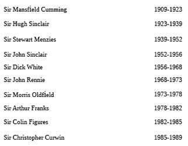

BÖLÜM 27
300’ler Komitesi’nin Hedefleri
Neyle karşı karşıyayız? Burada ortak fikir ve amaçlar etrafında toplanmış gevşek bir organizasyondan mı söz ediyoruz? 300’ler Komitesi için bu kesinlikle sözkonusu değildir. 150 yıllık Komite fikirlerinin çoğunu İsis, Osirus ve Dionysos kültlerinden alan pek çok entelektüel kişinin tamamen totaliter yeni bir toplum yaratmasını amaçlayan bir kurumdur.
Komitenin amacı üyelerinden H. G. Wells’in Açık Komplo: Dünya Devrimi İçin Planlar kitabında anlatılanlara benzer. Wells’in kitabının ismi oldukça cesur olsa da kendisine “Büyük Üstünler” ve “Gül ve Haç” örgütleri gibi bazı bağlantılı kurumlar dışında pek inanan olmamıştır. Wells’in teklifinin bir bölümü aşağıda verilmektedir:
“Açık Komplo değişik sosyal ve politik hedefleri olan ve var olan düzeni sadece siyasi güç veya toplumu bir yöne sürüklemek amacıyla kullanan akıllı ve zengin kişiler topluluğu olarak ortaya çıkacaktır. Habersizce yönlendirilen toplum sonunda nereye götürüldüğünü fark ettiğinde geç olacaktır. Bu grup insan baştaki hükümeti pek çok yol ve yöntemle etkileyecek ve kontrol edecektir.”
George Orwell’in 1984 isimli kitabında olduğu gibi Wells de Tek Dünya Devleti’nden bahsetmektedir. Özetlemek gerekirse 300’ler Komitesi hanedan şeklinde süren ve ortaçağdaki feodal yapıya benzer tek para birimi kullanan tek dünya devletini hedeflemektedir. Bu tek dünya devletinde nüfusa kaç çocuk sahibi olacaklarına dair sınırlama getirilecektir. Hastalıklar, kıtlıklar ve savaşlar yönetici elit grubun işine yarar 1 milyar insan kalana kadar “fazlalık nüfusu” yok edeceklerdir. Bu toplum yöneten ve hizmetkârlardan oluşacak olup orta sınıf bulunmayacaktır. Tüm kanunlar her yerde aynı olacak olup dünya mahkemelerince uygulanacaklar, Tek Dünya Devleti polis gücü ve silahlı kuvvetleriyle destekleneceklerdir. Tek Dünya Devleti sosyal yardım sistemini uygulayarak itaatkâr vatandaşlarının yaşamasına izin verirken isyankâr olanları açlık ile cezalandıracaktır. Bu devlette şahıslara silah satışı ve vatandaşların silah bulundurmaları yasak olacaktır.
Dünyada tek bir din olacak olup 1920 yılında kurulmuş olan Tek Dünya Kilisesi altında tüm insanlar toplanacaktır. Özel ve dini okullara izin verilmeyen tek dünya devletinde eğitim müfredatında büyücülük, satanizm, Gnostik öğretiler yer alacaktır. Hıristiyanlık ortadan kalkacak olup Hz. İsa ve Hıristiyanlık ibareleri tüm yazılı ve sözlü ibadetlerden çıkarılacaktır. Hz. İsa sıradan bir insan haline getirilerek ona yapılan ibadetler yasaklanacaktır. Deccal yönetimi hüküm sürecektir. Tekrar hatırlatmak gerekirse Da Vinci Şifresi Hz. İsa’yı sıradanlaştıran ve Gnostik öğretiyi öne çıkaran bir propaganda malzemesidir. Bireysel özgürlüğün olmadığı bu sistemde milliyetçilik, bağımsızlık veya cumhuriyetçilik kavramları da olmayacaklardır. Amerikan Anayasası kaldırılacak ve okunması yasaklanacaktır. Geçiş döneminde milliyet ve etnik kimliği vurgulayanlara ağır cezalar verilecektir. Her kişi Tek Dünya Devleti’nin bir üyesi olduğunu kabul etmeye zorlanacak ve kişinin vücuduna Brüksel NATO karargâhındaki bilgi işlem merkezince tanımlanacak bir numara vurulacaktır. CIA, FBI, eyalet ve yerel polis, Maliye, FEMA ve SGK master dosyaları genişletilip birleştirilerek Amerika’daki tüm insanları kapsayan bir veri tabanı oluşturulacaktır. Bu veri tabanı daha sonra Tek Dünya Devleti veritabanına entegre edilecektir.
Evlilik yasadışı olacak, aile kavramı kaldırılacak, çocuklar küçük yaşlarda annelerinden alınarak devletçe yetiştirileceklerdir. Bu uygulama Erich Honnecker döneminde Doğu Almanya’da uygulanmıştır ve devlete karşı olduğu kabul edilen ailelerin çocukları ellerinden alınmıştır. Kadın hakları hareketinin desteklenmesiyle kadınlar toplum içinde aşağılanır duruma getirileceklerdir. Yirmi yaş öncesi özgür seks mecburi kılınacak, kadınların kendi başlarına kürtaj yapabilmeleri öğretilecektir. Kadınların kürtaj bilgileri Tek Dünya Devleti veritabanındaki dosyalarına işlenecektir. İki çocuktan fazla çocuk doğurup üçüncüsüne kürtaj uygulamayan kadın polis zoruyla kürtaj kliniğine götürülerek kendisine müdahalede bulunulacak ve daha sonra da bu kadın kısırlaştırılacaktır. Homoseksüellik dahil olmak üzere okul, sinema ve televizyonlarda pornografi serbest olacaktır. Zevk için madde kullanımı yasal olacak herkes kendisine verilecek kota dahilinde istediği maddeyi Tek Dünya Devleti dükkânlarından satın alabilecektir. Düzen dışı veya isyankâr kişilere bilinç kontrol ilaçları zorla verileceklerdir. Hizmetkâr köle sınıfın boş vakitlerinde gidebileceği uyuşturucu barları Tek Dünya Devleti’nce açılacaktır. Böylece hizmetkâr sınıf beyinsiz kolay kontrol edilebilir ve yönetilebilir bir toplum haline gelecektir.
Ekonomik sistem elit grupça kontrol edilecek olup kölelere yaşayacak kadar gıda, eşya ve hizmet sunulacaktır. Tüm servet 300’ler Komitesi üyelerinin elinde toplanacaktır.
Her kişinin yaşamak için devletin yardımına ihtiyacı olduğu kendisine öğretilecektir. 300’ler Komitesi kararnameleri derhal kanunlaşacak ve dünya bunlarla yönetilecektir. Bu gün Amerika Birleşik Devletleri’nde gördüğümüz kararnameler yönetimi geçiş döneminde yapılan bir denemedir. Halkın bu yönetim tarzına reaksiyon vermemesi halinde daha aşırı uygulamalar başlayacaktır. Mahkemeler artık adalet dağıtmak için değil cezalandırmak için kullanılacaktır. Endüstri kaldırılacak nükleer santraller kapatılacaktır. Sadece 300’ler Komitesi üyeleri dünyadaki doğal kaynakları kullanma hakkına sahip olacaklardır. Tarım Komite’nin elinde olacak ve gıda üretimi sıkı kontrolde tutulacaktır. Bu uygulamalar sayesinde büyük şehirlerin nüfusu kırsalda yaşamaya zorlanacaktır. Benzer uygulama Kamboçya’da Pol Pot rejimince uygulanmıştır. Yaşlı ve ölümcül hastalıkları olanlar için ötenazi mecburi hale gelecektir. Büyük şehirlerin nüfusları Richard Coudenhove Kalgeri’nin yazılarında belirtildiği şekilde önceden belirlenen sayıyı aşmayacaktır.
Şehirlerin nüfuslarının limiti aşması halinde eğitimli işçiler başka şehirlere nakledileceklerdir. Vasıfsız işçiler ise kura ile belirlenerek limit altı kalan şehirlerde yaşamaya zorlanacaklardır. 2050 yılına kadar en az üç milyar “gereksiz kaşık düşmanı” Tek Dünya Devleti’nce başlatılacak açlık, hastalık salgınları, kanser ve savaşlarla yok edilecektir. Batı Avrupa ve Kuzey Amerika’daki beyaz halklardan başlamak üzere hizmetkârlar için enerji, su ve gıda yaşamı idame edecek seviyede tutulacaktır. Amerika Birleşik Devletleri, Kanada ve Batı Avrupa nüfusları, dünya nüfusu 1 milyar kişiye düşene kadar diğer kıtalardan daha hızlı azalacak olup bu nüfusun 500 milyonu yüzyıllardır üstün ırklardan emir almaya alışkın Çinli ve Japonlardan oluşacaktır. Zaman zaman özellikle yaratılacak su, enerji, gıda sıkıntıları veya hastane hizmetlerinde aksamalar halka 300’ler Komitesi’ne ne kadar bağımlı olduklarını hatırlatmakta kullanılacaktır.
Otomotiv, çelik, makine ve diğer önemli endüstri kollarının yok edilmesinden sonra konut ve endüstriyel tesis sayısı iyice azaltılacaktır. NATO’ya bağlı Roma Kulübü direktifinde bilimsel araştırmalar ve uzay çalışmaları sadece elit kesime hizmet edeceklerdir. Tüm ülkelerin uzayda konuşlandırdıkları silahlar ve dünyadaki nükleer başlıklar yok edileceklerdir. Tüm ilaçlar, doktorlar, dişçiler ve sağlık çalışanları merkezi veritabanına kayıt olacaklar dolayısı ile tıbbi hizmet veya ilaç reçeteleri bölgesel otoritelerce kontrol edileceklerdir. Amerika Birleşik Devletleri dışarıdan gelen, tek amaçları yemek ve barınma olan ve Amerikan Anayasası hakkında hiçbir bilgisi olmayan kişilerin istilasına uğrayacaktır. Uluslararası Takas Bankası, Dünya Bankası ve birkaç özel banka dışında tüm bankalar kapatılacaklardır. Tüm dünya üzerinde işçi ücretlerine zam aynı oranda yapılacaktır. Bu düzende işçi haklarını koruyacak sendikalara izin verilmeyecektir.
Hizmetkâr sınıfın elinde para bulunmayacak ve tüm alışveriş kişilerin kimlik numaralarının yazılı olduğu kartlarla yapılacaktır. 300’ler Komitesi kural ve kanunlarını ihlal eden kişilerin kartlarına suçlarına bağlı şekilde el konacaktır. Dolayısı ile bu kişiler alışveriş yapamayacaklardır. Eski paraları kullanmaya çalışmanın cezası ölüm olacaktır. Tüm eski paralar, tüfekler, tabancalar, patlayıcılar ve otomobillerle beraber devlete teslim edileceklerdir. Sadece Tek Dünya Devleti’ndeki elitlerin özel araç, silah ve para bulundurmaya hakları olacaktır.
Kartları ellerinden kişiler “kanun kaçaklarına” dönüşecekler ve şehirlerden uzak bölgelerde yaşam savaşı vereceklerdir. Kanun kaçaklarına yardımın cezası ölüm olacaktır. Verilen süre içinde polise teslim olmayan kanun kaçakları yerine ailelerinden biri ceza çekecektir. Araplar, Yahudiler ve Afrika kabilelerinden gelen gruplar arasına fitne atılarak Birleşmiş Milletler ve NATO gözetiminde birbirleriyle savaşmaları sağlanacaktır. Bu taktikler Tek Dünya Devleti kontrolü tam ele geçirmeden etnik ve mezhepsel farklılıklar gösteren Sihler, Sünni ve Şiiler, Hindular, Afrika’daki farklı etnik gruplar arasında uygulanarak birbirlerini kırmaları sağlanacaktır. Etnik ve dini farklılıklar abartılarak bu gruplar birbirlerine düşürüleceklerdir.
Tüm televizyon, radyo, internet ve yazılı basın Tek Dünya Devleti hükümeti kontrolünde olacaktır. Amerika’da harika uygulandığı şekilde beyin yıkama eğlence ve şov programları şeklinde yaygınlaştırılacaktır. Asi gençler vahşet konusunda eğitilerek tek Dünya Devleti tutuklu işçi kamplarında gardiyan olarak görevlendirileceklerdir. Görüldüğü gibi Yeni Dünya Düzeni’ne geçmek için yapacak daha çok şey vardır. 300’ler Komitesi medeniyetimizi çok uzun zamandır istikrarsızlaştırma planlarını düzeltmiş ve kusursuzlaştırmıştır. Bunu Polonyalı aristokrat Zbigniew Brzezinski’nin İki Çağ Arasında ve Roma Kulübü kurucusu Aurelio Peccei’nin Karşımızdaki Uçurum kitaplarında görmekteyiz. Her ne kadar George Orwell’in 1984 isimli eseri bilimkurgu olarak isimlendirilse de bu esere temel olan bilgiler Londra’daki gizli dosya ve arşivlerden alınmışlardır.
Karşımızdaki Uçurum isimli kitabında Peccei “düşman” olarak nitelendirdiği insanların 300’ler Komitesi planına göre nasıl yola getirileceğini açıklamıştır. Peccei Felix Dzerzhinski’nin milyonlarca Rus’un katledildiği “Kızıl Terör” sırasında Sydney Reilly’e söylediklerinden bahsetmektedir: “Kaç kişinin öldüğü konusunda neden üzüleyim? Hıristiyanların İncil’i bile insanların Tanrı’nın gözünde değersiz olduklarından bahsetmektedir. Bana göre insan bir ucunda beyin diğer ucunda bok fabrikası olan bir yaratıktan fazla değildir.”
Hz. İsa işte bu hastalıklı görüşlerden insanları kurtarmak için dünyaya gelmiştir. Sydney Reilly Dzerzinski’nin faaliyetlerini incelemek üzere görevlendirilmiş bir MI6 ajanıdır. İddialara göre Reilly Rusya’dan kaçmak isterken arkadaşı Felix tarafından vurularak öldürülmüştür. İngiliz Parlamentosu Reilly’nin Rusya’daki faaliyetleri konusunda daha fazla bilgi istemeye başladığında 300’ler Komitesi’nin Bakü petrol alanları ve Bolşevik Devrimi esnasında Lenin ve Troçki’ye yaptıkları yardımların ortaya çıkma olasılığı belirmiştir. Reilly’nin sorgulanması yerine MI6 ortadan kaldırılmasını daha doğru bulmuştur. Reilly günlerini Wallenberg ailesinin lüks villasında geçirmektedir. Wallenberg ailesi 300’ler Komitesi üyeleri olup İsveç’teki pek çok büyük firmanın sahibidirler. Reilly’nin yaşadığı villa tam Rus sınırındaki pek çok Wallenberg villasından biridir.
Post endüstriyel sıfır büyüme döneminde Amerika’yı yönetecek bir “Atlantik Paktı” kurulmadığı takdirde kaosun ortaya çıkacağını düşünen Peccei küresel ölçekte Maltlhus sınıflandırmasının yapılmasını istemektedir. Peccei, Batı ve Sovyetler Birliği arasında bilimsel-teknolojik-askeri çatışma olacağını düşünmektedir. Peccei’ye göre bunu önlemek için SSCB ve Varşova Paktı devletlerine Tek Dünya Devleti altında toplanma teklifi yapılmalıdır. Varşova Paktı ve Sovyetler Birliği’nin yıkılışı sonrası ortaya çıkan bağımsız devletlerin durumu tam Peccei ve Roma Kulübü’nün hayal ettikleri gibi olmuştur. Sovyetler Birliği parçalanarak daha kolay idare edilebilir küçük devletlere bölünmüştür. Parçalanmış Sovyetler Birliği parçalarını içine alacak Tek Dünya Devleti Komite’nin planıdır. Bu olayların Komite tarafınca uzun vadede planlanmış olmaları çok korkunçtur. Yalnız burada Vladimir Putin’in başa geçişinin 300’ler Komitesi’ni şaşırttığını belirtmeliyim. Milliyetçi bir lider olan Putin Rusya için 300’ler Komitesi’nin değil kendi vizyonunu benimsemiştir.
Batı Avrupa’da tek para birimi olan bir federatif devlete geçiş halen devam etmektedir. Tek Dünya Devleti’nin kurulmasıyla AB modeli Amerika ve Kanada’ya da uygulanmaya başlanacaktır. Yavaş yavaş Birleşmiş Milletler Teşkilatı Irak ve Sırbistan vakalarında gördüğümüz gibi Amerika’ya dikte ettirilecek Komite kararlarının noteri haline gelmektedir. Aynı şey İngiltere’de de yaşanmakta olup Körfez Savaşı’na katılma kararı tam parlamento toplantısına ara verilecekken aniden alınmıştır. İngiliz tarihinde bir ilk olan böyle önemli bir kararın bu kadar kısıtlı süre içinde alınması medya sayesinde halkın dikkatine sunulmamıştır. Öyle bir noktaya gelmekteyiz ki Amerika, Birleşmiş Milletler’in önüne konan her sorunu askeri gücünü kullanarak çözmeye mecbur edilecektir. Rüşvetçi Birleşmiş Milletler eski genel sekreteri Perez de Cuellar Amerika’nın sözünden çıkmayan bir kişidir. Halefi Kofi Annan ise ondan daha fazla Amerikancıdır. Bu adamların Birleşmiş Milletler teşkilatının başına getirilmeleri Tek Dünya Devleti için önemli bir adımdır. Afrika’dan seçilen ne idüğü belirsiz Kofi Annan Amerika ve İngiltere’yi kontrolü altında tutan Komite için çok önemlidir çünkü böyle adamlar sayesinde Birleşmiş Milletler noter haline gelmektedir.
Lahey’de Kurulu Uluslararası Adalet Divanı ileriki yıllarda her türlü yasal problemin çözülmesinde daha fazla kullanılacaktır. Bu tabii ki Tek Dünya Devleti adalet sisteminin temelini oluşturacaktır. Diğer taraftan üye ülke bankalarının sermaye yeterlilik oranlarını belirleyen Uluslararası Takas Bankası zaten pek çok ülkedeki küçük bankaları batırmak suretiyle “Büyük 10” diye adlandırılan dev bankaların önünü IMF ile birlikte açmaktadır. Avrupa zaten sosyal güvenlik sistemi güçlü ülkelerle dolu olup Amerika bu alanda dünyanın en büyük ülkesi olmaya adaydır. Halkı devlet yardımına muhtaç hale getirdikten sonra bu halkı tekrar bu alışkanlıktan kurtarmak imkânsız gibidir. Nitekim 2004 seçimlerinde “sosyal güvenlik” taraftarı kadroların tekrar iş başına getirilmeleri bunu göstermektedir.
Kişilerin silah sahibi olmaları hakkı zaten dünyadaki pek çok ülkede yasaktır. Amerika’da halk halen silah sahibi olma hakkına sahipse de bu anayasal hak yerel ve eyalet kanunlarıyla ihlal edilmektedir. Amerikan Devrimi kahramanı ve William and Mary College hukuk profesörü St George Tucker’a göre Amerika Birleşik Devletleri’nde silah taşıma 2020 tarihinde tarih olacaktır. Eğitim sistemi hızla yozlaşmaya giderken özel okullar yasal problemler ve finansman güçlüğü nedeniyle kapanmaktadırlar. Amerika’daki eğitim seviyesi o hale gelmiştir ki artık bunu eğitim diye niteleyebilmek zordur. Bu çocuk ve gençlerimizin iyi eğitim almasını istemeyen 300’ler Komitesi planıyla uyumlu bir gidişattır. Milli kimliğin yok edilmesi hızla devam etmektedir. Komite’nin doğal kaynaklarını kapmasına engel olmaya çalışan devletlere karşı açılacak savaşlar dışında milliyetçilik veya vatanseverlik artık istenmeyen özelliklerdir. Irk ve milliyet gururu artık Amerika, İngiltere, Almanya, diğer AB ülkeleri ve dünyanın pek çok ülkesinde yasalarla illegal duygu haline getirilmiştir. Kanada gibi kahir çoğunluğun beyaz olduğu bir ülkede milliyet ve ırktan bahsetmek neredeyse “nefret suçu” olmak üzeredir.
İkinci Dünya Savaşı sonrası Amerika’daki gizli kurumlar tarafından dünyadaki cumhuriyet yönetimi taraftarı hükümetler hızla yok edilmektedirler. Cumhuriyet rejimleri yok edilen ülkeler listesi çok uzun olup, bu ülkelerde yaşayan ve kendilerinin anayasal cumhuriyetle yönetildiklerini sanan insanların bu gerçeği kabul etmeleri çok zordur. Ama bu Komite tarafından yüz yıl önce planlanmış bir gelişmedir. Amerika Birleşik Devletleri dünyadaki anayasal cumhuriyet yönetimlerine yok etmek üzere saldırmaktadır ve saldırmaya devam edecektir. Hatta bu gizli kurumlar Amerika Birleşik Devletleri’ndeki cumhuriyetçi tabanı yok etmeye çalışmaktadırlar. Eski başkan Carter’ın hukuk danışmanı Lloyd Cutler ve anayasa hukukçuları Amerikan Kongresi’ni temsili demokrasinin olmayacağı bir parlamenter sisteme geçirmek üzere çalışmalara başlamışlardır. 1979 yılında başlayan bu çalışmalar kesintisiz devam etmekte olup gösterdiği başarıdan dolayı Cutler 300’ler Komitesi’ne üye olarak alınmıştır.
Yeni parlamenter sistemde temsilciler kendilerini seçenlere karşı sorumlu olmayıp parti grup kararları veya parti lideri emirleri uyarınca hareket edeceklerdir. Bu aslında de facto bir durum olup uzun süredir Temsilciler Meclisi, Senato ve Beyaz Saray kontrolünün aynı parti çoğunluğunda olması başkan kararlarının Kongrece noter gibi onaylanmasına neden olmaktadır. Dolayısı ile bürokrasi ve yargı elleriyle Anayasa ortadan kaldırılmakta, bu konuda medya çakallarından ses çıkmamaktadır. Bireysel özgürlükler zaten yokuş aşağı gitmektedirler. Büyük siyasi ve anayasal değişikliklerin farkına varılmaması için sosyal dejenerasyon hızlandırılmıştır. Yeni cinsel sapkın tarikat ve kültler İngiliz monarşisi için çalışan SIS ve MI6 tarafından kurulmaktadırlar. Bilindiği üzere din farkı olmaksızın şu anda dünya üzerindeki tarikatlar İngiliz monarşisinin ürünleridir. Dejenere cinselliğe odaklanan bir tarikatın kurulması bize hayal gibi gelse de bildiğim kadarıyla bu çalışmalar 2005 yılından beri hızlandırılmıştır.
2050 yılında “canlı” seks şovlar en prestijli kulüplerde bile seyredilir eğlence haline geleceklerdir. Bu tip şovların zararsızlığı ve masumiyeti halka şimdiden pompalanmaya başlanmıştır. Pek yakında Hollywood yıldızları veya eğlence dünyasının ünlüleri canlı seks şovlardaki kendi favori kulüplerini halka duyurarak reklam yapmaya başlayacaklardır. Homoseksüellik son yirmi yıldır “tedricen” sosyal olarak kabul edilebilir hale getirilmiştir. Pornografi artık “yetişkin eğlencesi” olarak isimlendirilmektedir. Ahlaki değerlerimize saldırı 1994 yılında “Herkesin yaptığını neden saklayalım!” sloganıyla zirveye ulaşmıştır. Kısa süre sonra porno müptelalarının karanlık ve pis “sex shop” lara gitmelerine gerek kalmayacaktır. Çünkü elit kesimin gittiği kulüpler “seks şovları”, “artistik eğlence” haline getireceklerdir. Daha da kötüsü bazı din adamları bile bunu destekleyeceklerdir. Tavistock Enstitüsü’nün büyük ölçekli sosyal psikoloji projesi ve bu kuruma bağlı kurumlar ağı tek bir güç tarafından kontrol edilmektedir.
Tavistock İnsan İlişkileri Enstitüsü 300’ler Komitesi isimli komplocular hiyerarşisinin ayrılmaz bir parçası olup John F. Kennedy’nin de fark ettiği gibi dünyadaki hiçbir hükümet, lider veya kurum Komite’den daha kuvvetli olamaz. Komite İngiltere, Hollanda, Danimarka kraliçelerinin de içinde bulunduğu ve dokunulmaz kişilerden oluşan mutlak gizli güçtür. Kraliçe Viktorya’nın ölümü sonrası bu aristokratlar dünyadaki kontrolü ele geçirebilmek için aristokrat üyelerin aristokrat olmayan ancak çok güçlü kişilerle küresel iş ortaklıkları yapmasına karar vermişlerdir. Böylece Komite’nin kapıları İngiliz Kraliçesinin deyimiyle “avam” tabakasına da açılmıştır. Alan çalışmalarım esnasında yabancı devlet adamlarının bu oluşuma “Sihirbazlar” ismini verdiğini gördüm. Bu teşkilata Stalin “Karanlık Güçler,” Komite tarafından “Yahudi’si Ayakçı” diye isimlendirilen Eisenhower “Askeri Endüstriyel Kompleks” adını vermişlerdir. Stalin SSCB’yi “Karanlık Güçlere” güvenmediğinden nükleer ve konvansiyonel silahlarla donatmıştır. Stalin’in güvensizliği ve kuşkuları çok yerindedir.
Eğlence dünyası özellikle de film endüstrisi, bireysel özgürlükler ve insanlığın boyunduruk altına alınması konusunda halkı uyaranları sistematik olarak küçük düşürmüştür. Özgürlük hissi insana Tanrı tarafından verilmiş bir duygu olup açgözlü ve ahlaksız liderlerce sürekli yok edilmek istenmiştir. Ancak her insanın içinde bu duygu o kadar güçlüdür ki şimdiye kadar hiçbir lider veya sistem bunu kökten yok edememiştir. Bu konuda SSCB, İngiltere ve Amerika’da halk üzerine yapılan tüm deneyler başarısız olmuşlardır. Çünkü insanın özgürlük hissi hükümetlerden değil Tanrı’dan gelmektedir. Yeni Dünya Düzeni’ne geçişin hazırlıkları yapıldığı günümüzde insan Tanrı tarafından verilen özgürlük hissinin onun aklından, ruhundan ve vücudundan sökülüp atılması üzerine pek çok deney yapılmaktadır. Şimdiye kadar yaşadıklarımız yaşayacaklarımız yanında hiç kalmaktadır. Hazırlanan yeni planda insan ruhuna saldırı ana hedefi oluşturmaktadır. Bu tip deneylerde Amerika Birleşik Devletleri toprakları başı çekmekte olup James Forestall’ın kapatıldığı Bethesda Deniz Kuvvetleri Hastanesi ve Charles Manson’un tutulduğu Kaliforniya’daki Vacaville hapishanesi bunun kanıtlarıdır.
James Bond filmlerinde gördüğümüz “Suikast Bürosu” ve “Matarese Çemberi” böyle organizasyonların varlığını saklamak için uydurulmuş kurgu kurumlardır. Ancak bu kurumlardan çok daha korkunçları hatta Hollywood senaristlerinin bile aklına gelmeyecek kadar büyükleri şu anda dünyada vardır. Suikast Bürosu tamamen gerçektir. Bu büro Amerika ve Avrupa’da olup başka yöntemlerin işe yaramadığı durumlarda cinayetler işlemektedir. Bu bürolardan biri İngiltere kraliçesinin “haşerat itlafçısı” Sir William Stephenson tarafından yönetilen ve Kennedy suikastını düzenleyen PERMINDEX’tir. CIA sözleşmeli ajanlarından Clay Shaw New Orleans merkezli PERMINDEX firmasının sahibidir. Eski New Orleans Bölge Savcısı Jim Garrison Kennedy suikastını aydınlatmaya ve Clay Shaw’u yakalamaya çok yaklaşmıştır. Ancak Garrison’un hesabı görülmüş ve Shaw suçsuz bulunmuştur. Garrison diğer sözleşmeli ajan Jack Ruby gibi hızla ilerleyen kanserden ölmüştür. Garrison’un ani ölümü onun doğru yolda olduğunu göstermektedir.
İkinci suikast bürosu İsviçre’de olup 1941 sonrası hiçbir fotoğrafları bulunmayan eski Fransız lejyonerlerince işletilmektedir. Operasyonlar İsviçre Kara Asaleti tarafından finanse edilip bu iş için 300’ler Komitesi bankaları Cenevre Lombard Odier Bank ve Londra Schroeder’s Bank kullanılmaktadır.
Amerikan Kara Kuvvetleri G2 kayıtlarına göre eski Fransız subayı Jacques Soustelle tarafından cumhurbaşkanı de Gaulle’e yapılacak suikast bu grupça planlanmıştır. Büro Allen Dulles ve 300’ler Komitesi üyesi Texas petrol zengini Jean de Menil ile çok yakın ilişki içindedir. Kara Kuvvetleri G2 kayıtları büronun Ortadoğu silah satışlarında önemli rol oynadığı ancak daha önemlisi General Charles de Gaulle’e 30 suikast düzenlediğini göstermektedirler. Soustelle ismi gazetelerde 300’ler Komitesi’nin Peru kokain ticaretini koruyan Sendero Luminosa (MI9) gerilla grubu konusunda sıkça geçer. Tüm suikast girişimleri Fransız istihbaratı DGSE (eski ismi SDECE) tarafından başarıyla önlenince de Gaulle’ü öldürme görevi MI6’e “çakal” kod ismiyle verilir. SDCE genç ve kabiliyetli istihbaratçılarla çalışan ve MI6 ya da KGB tarafından sızılması çok zor bir kuruluştur.
Yabancı ajanları takip sistemi tüm istihbarat servislerince kıskanılan SDCE “çakalı” bulur ve resmi geçitte General de Gaulle’ü vuramadan öldürür. SDCE Sovyet casusu Thyraud de Vosjoli’yi de Gaulle kabinesinde tespit eden kurumdur. Bu adam ayrıca CIA ile bağlantı noktasıdır. SDCE’yi gözden düşürmek isteyen Allen Dulles (de Gaulle’den nefret etmektedir) ajanlarından biri olan Roger de Louette’in 12 milyon dolarlık eroin ile yakalanmasını ayarlar. Uzun süren sorgulama sonucu de Louette SDCE’ye çalıştığını itiraf eder ancak neden eroin kaçırdığını açıklayamaz. Bu tam bir tezgâhtır. SDCE’nin de Gaulle’yi resmi geçitlerde nasıl koruduğunu detaylı inceleyen FBI, CIA ve Gizli Servis Başkan Kennedy’nin resmi geçitte korumasız kalması için ne yapılması gerektiğini tespit ederler. Böylece üç PERMINDEX nişancısı başkanı Kasım 1963’te Dealey Plaza resmi geçidinde kolaylıkla öldürürler. Leon Uris’in kitabı Topaz’da SDCE tarafından yakalanan KGB’nin CIA bağlantısı Thyraud de Vosjoli’nin gerçek faaliyetleri anlatılır.
Mossad “Enstitü” diye bilinir. Pek çok yeniyetme yazar Mossad hakkında pek çok uyduruk şey yazmaktadırlar. Amerikan milliyetçi sağ kanadında Mossad hakkında yapılan pek çok dezenformasyon çalışması vardır. Mossad ilk başta üç gruptan oluşmaktaydı. Bunlar Askeri İstihbarat Bürosu, Dışişleri Siyasi Şube ve Güvenlik Şubesidir (Sherut Habitachon). 300’ler Komitesi üyesi David Ben Gurion Mossad’ı kurmak için MI6’dan çok yardım almıştır ancak tam başarılı olamamıştır. 1951 yılında MI6’den Sir William Stephenson Mossad’ı İsrail Dışişleri Siyasi Şubesi altında tek bir kurum olarak istihbarat toplama göreviyle yeniden yapılandırmıştır. Mossad ayrıca “kara işler” operasyonlarını da götürmeye başlamıştır. İngiltere ayrıca kendinde bulunan Hava Kuvvetleri Özel Harekât Birliği’ne benzer İsrail Genel Kurmay Keşif Birimi’ne eğitim vermiştir. “Sarayet Maktal” denilen Mossad’ın bu bölümü ismiyle hiç anılmamış ve “Adamlar” ismiyle tanınmıştır.
“Adamlar” İngiliz istihbaratı SAS gibi sürekli yeni teknikler üzerindeki çalışmalarına devam etmiştir. “Adamlar” FKÖ liderlerini öldüren ve Adolph Eichman’ı kaçıran gruptur. “Adamlar” hatta tüm Mossad ajanları her zaman savaş durumdadırlar. Mossad’ın diğer istihbarat servislerine karşı en büyük avantajı dış ülkelerde bulunan Yahudi topluluklarıdır. Mossad’ın bir diğer avantajı ise tüm Amerikan emniyet ve istihbarat kayıtlarına ulaşabilmesinde yatar.
Deniz Kuvvetleri İstihbaratı (ONI) Mossad’a ücretsiz hizmet etmektedir. Amerikalılar Mossad’ın politik yaşamı olmayan Amerikan vatandaşlarının bile özel hayatlarına dair neler bildiğini bilseler şaşırır kalırlar. İlk Mossad başkanı Reuben Shiloach 300’ler Komitesi’ne kabul edilse de haleflerinin aynı onuru taşıyıp taşımadıkları belli değildir. Mossad dezenformasyon hizmetlerinde çok başarılı bir kurumdur. Mossad’ın Amerikan halkına yutturduğu dezenformasyon miktarı utanç vericidir ancak daha da utanç verici olanı Amerikalıların bu yalanları kolaylıkla yutmalarıdır. Aslında Mossad büyük bir organizasyonun küçük bir parçasıdır. Olimpos Kurulu üyeleri Mossad gibi pek çok örgütü yöneterek, gazete, eğlence, yayıncılık, televizyon, kamuoyu araştırma sektörlerini kontrol altında tutarak küresel gücü ellerinde bulundurmaktadırlar. Ted Turner CNN’i kurması nedeni ile Komite üyeliğine seçilmiştir. Rupert Murdoch Fox News ile sağladığı propaganda hizmeti nedeni ile 1999 yılından beri Komite üyesidir. 300’ler Komitesi’nin örtüsünü kaldırma başarısını gösteren her araştırmacı ya satın alınır veya Tavistock’ta özel eğitime tabii tutularak ileride James Bond tipli yayınların yazarı haline gelir yani ödüllendirilir. Eğer böyle bir araştırmacı doğruyu söylemekte ısrar ederek satın alınmayı kabul etmezse ve tehditlerden korkmazsa bir cinayete kurban gider.
Başkan Kennedy halkın gözleri önünde ve geniş medya yayını içinde öldürülerek dünya liderlerine gözdağı verilmiştir. Papa I. John Paul Vatikan’daki Mason faaliyetleri araştırarak Komite’ye yaklaştığından sessizce öldürülmüştür. Halefi Papa II. John Paul’a Mehmet Ali Ağca ile halkın içinde gözdağı verilerek emirlere mutlak itaati sağlanmıştır. Göreceğimiz gibi bazı Vatikan liderleri de 300’ler Komitesi üyeleridirler. Komiteyi araştıran ciddi araştırmacıların kafaları MI6’in yeni kurduğu New Age, Yogai Zenn Budizm, Büyücülük, Apollo Delfi gibi kültlerle karıştırılır.
Doğru izi süren bir grup eski İngiliz istihbaratçı komplocuların hiyerarşisini “Force X” diye isimlendirerek bu organizasyonun KGB, Vatikan istihbaratı, CIA, ONI, Savunma İstihbarat Ajansı (DIA) ve Dışişleri İstihbarat Servisi ve hatta en gizli Amerikan servisi olan Ulusal Haber Alma Ofisi’ni çökerttiğini belirtmişledir. Ulusal Haber Alma Ofisi’nin (NRO) varlığı Truman yanlışlıkla öğrenene kadar 300’ler Komitesi dışında kimse tarafından bilinmezdi. Churchill NRO’nun kuruluşunda rol oynamış olup Truman bu örgütü fark ettiğinde hâlâ işin içindedir. Her Komite üyesi gibi Churchill de Truman’ı “Independence’ten gelen küçük adam” diye isimlendirmektedir. Truman’ın her hareketi Masonların kontrolü altındadır. Bu gün bile NRO yıllık bütçesi bilinmemektedir ve kurum sadece Kongre’den birkaç kişiye hesap vermektedir. NRO Komitenin yavrusu olup ona birkaç saat arayla rapor verir. MI6 Kraliçe I. Elizabeth’in casus başı Sir Francis Walsingham tarafından kirli işler için kurulmuştur. Kuruluşundan itibaren bugüne kadar MI6 tüm diğer istihbarat örgütlerinden daha iyi olmuştur. Bunun tek istisnası Willi Munzenberg yönetiminde gerçekleşen “Kızıl orkestra” operasyonudur. Bu operasyonda orkestra şefi Leon Tepper’dir. MI6 ajanları dünyanın dört bir köşesinden bilgi toplar, herkesi şaşırtacak büyük operasyonlar düzenlerler. Bu nedenle MI6’in 300’ler Komitesi için çok önemli bir yeri vardır. 1998 yılındaki değişikliklere kadar MI6 hiçbir zaman resmi olarak var olmamıştır. Bu kurumun 450-650 milyon dolar olduğu sanılan bütçesi kraliçenin özel hesaplarından karşılanmaktadır. MI6 bugünkü halini 1911 yılında Kraliyet Donanması Yüzbaşı Sir Mansfield Dimming yönetiminde almıştır. MI6’in başarıları veya başarısızlıkları hakkında hiçbir resmi yazışma bulunmaz ve ajanların kimlikleri mahkemelerde bile açıklanmaz. Burgess-Maclean-Blake- Blunt felaketleri MI6 ajanlarının morallerine büyük zarar vermişlerdir. MI6 ajanları üniversite mezunlarından seçilirler ve yabancı dil bilme mecburiyetleri vardır. Adaylar karakterlerindeki bozuklukları ortaya çıkaran çok zor testlerden geçerler. Böyle mükemmel bir gücü bünyesinde bulunduran 300’ler Komitesi’nin açığa çıkarılmaktan korkusu tabii ki yoktur.
300’ler Komitesi büyük ölçüde İngiliz Kraliyetinin kontrolü altındadır yani şimdi başında Kraliçe II. Elizabeth vardır. Kraliçe Viktorya “Karın deşen Jack” cinayetlerinde cinayet mahalline bırakılan ve Komite’nin İskoç Mason Locasından gelen Kraliyet Ailesi mensubunca işlenen cinayetlerdeki bağlantısını ima eden Masonik yazmaları yok etmek için büyük çaba harcamıştır. 300’ler Komitesi’nin Rusya dahil her ülkenin iş dünyasında güçlü aristokrat üyeleri vardır. Ancak Stalin’in müdahalesi Komiteye 60 yıl kaybettirmiş, Kremlin’in askeri kanadınca desteklenen Başkan Putin’in göreve gelmesiyle Komite’nin Rusya planlarına ciddi muhalefet başlamıştır. Eski bir istihbaratçı olan Başkan Putin’in 300’ler Komitesi ve Tek Dünya Devleti hakkında bilgisi gayet iyidir. Komitenin yapısı aşağıdaki gibidir:
Sussex Üniversitesi’ndeki Tavistock Enstitüsü Kraliyet Uluslararası İlişkiler Enstitüsü’nce kontrol edilir. Bush ailesine geçmeden önce Amerika ile olan ilişkileri “Yahudi hizmetkâr” Henry Kissinger götürmektedir.
Eagle Star Group isimli holding II. Dünya Savaşı sonrası ismini Star Group’a çevirmiş olup uluslararası arenada faaliyet gösteren pek çok firmayı bünyesinde bulundurmaktadır. Bu holding firmalarının faaliyet alanları:
- Sigortacılık
- Bankacılık
- Emlak
- Eğlence
- İleri teknoloji
- Uydu ve uzay silah sanayi
Bankacılık ana gelir kaynağı olmasa da özellikle 1997 sonrası artan uyuşturucu ticaretindeki para aklama operasyonlarında çok önemli rol oynamaktadır. Komiteye bağlı bazı bankalar aşağıdaki gibidir:
American Express Bank seyahat çekleri uyuşturucu dolarlarını aklamanın iyi bir yoludur. Bu büyük bankaların her biri dünyadaki yüzlerce hatta binlerce irili ufaklı bankayla ilişki içindedirler. 300’ler Komitesi networkunda bulunan bu irili ufaklı bankalardan bazıları aşağıdaki gibidir:
Bu liste tüm önemli bankaları kapsamamaktadır. Örneğin Amerika’ya giren ve çıkan sıcak parayla uğraşan Banca del la Svizzeria Italiana (BSI) genelde Amerikan doları ve Amerikan tahvilleri üzerine uzmanlaşmıştır. Amerika’dan çıkan dolar ve bonolar Venedik Kara Asaleti’nin sıcak para merkezi olarak bilinen “tarafsız” Lugano’ya getirilirler. Lugano İtalya ve İsviçre’nin bir parçası olmayan ve kara sermaye operasyonlarının çevrildiği bir yerdir. Şimdi ölmüş olan George Ball BSI büyük sermayedarlarından ve bankanın Amerika temsilcisiydi.
Güney Afrikalı Oppenheimer Hanedanı’nın Lugano BSI’da hesapları vardır. Aslında Oppenheimer Hanedanı Rockefeller Hanedanı kadar önemlidir. Örneğin 1981 yılında elmas ve altın devi Anglo American Corporation firması başkanı Harry Oppenheimer Kuzey Amerika bankacılık piyasasına gireceğini belirtmiştir. Oppenheimer Citicorp dahil Amerika’daki pek çok bankayı almak için Bermuda’da kurduğu MINORCA isimli kuruma 10 milyar dolar yatırmıştır. MINORCA yönetim kurulunda Citicorp’tan Walter Writson ve yardımcısı Robert Clare vardır. Değerli maden ve mineraller pazarında Oppenheimer’ın tek ciddi rakibi Konsolide Güney Afrika Altın Madenleri firmasıdır. Oppenheimer bu firmanın %28 hissesini alarak en büyük sermayedarı olmuştur. Dolayısı ile altın, elmas, platin, titanyum, tantalit, bakır, demir, tungsten, uranyum ve Amerika için stratejik önemi olan 52 diğer madde 300’ler Komitesi tekeline girmiştir. Bu hareketle 300’ler Komitesi’nin eski Güney Afrikalı üyesi ve beklide dünyanın en acımasız ve kalpsiz insanı olan Cecil John Rhodes’in vizyonu gerçekleşmiştir. Ki o vizyon binlerce masum Boer’in Güney Afrika’da soykırıma uğramasıyla başlamıştır. Tüm diğer dünya ülkeleri gibi Amerika hareketsiz olarak dururken bu küçük ülkede dünya tarihindeki en önemli soykırımlardan biri yaşanmıştır. Amerika Birleşik Devletleri de zamanı gelince 300’ler Komitesi’nden aynı muameleyi görecektir ve buna az kalmıştır.
Sigorta firmaları 300’ler Komitesi işleri içinde önemli rol oynarlar. Bunlar içinde dünya devleri Venedikli Assicurazioni Generale (ASG) ve Riunione Adriatica di Sicurta (RAS) vardır. Bu firmalar hesaplarını Uluslararası Takas Bankasında altın İsviçre frankı olarak tutarlar. Bu sigorta şirketlerin Wall Street’teki hisse senedi ticaretleri en büyük Amerikan kurumsal yatırımcısının en az iki hatta üç katı olan yatırım bankalarına sahiptirler. Bu sigorta firmalarının yönetim kurulları içinde 300’ler Komitesi üyesi, soylarını Roma imparatoru Jüstinyen’e dayatan Roma ve Venedik Kara Asalet Ailesi Giustiniani ailesi bulunmaktadır. Diğer yönetim kurulu üyeleri arasında Sir Jocelyn Hambro Banktan Sir Jocelyn Hambro ve Kara Asalet ailelerinden gelen Pierpaolo Luzzatti Fequiz ve Umberto Ortolani gibi isimler vardır.
300’ler Komitesi üyesi ve bu sigorta firmaları yönetim kurulunda Venedik Kara Asalet üyeleri İspanyol Habsburgların finansörü Doria ailesi, Rothschildslerin Fransa kolundan Elie de Rothschild, zamanında Almanya’nın ikinci büyük zengini olan Baron August von Finck ve Orsini Kara Asaletinden gelen Franco Orsini Bonacassi, soyu Alba Düküne dayanan Alba ailesi ve Rothschild’lerin Belçika kolundan Baron Pierre Lambert bulunmaktadır.
İngiliz Hanedanı tarafından kontrol edilen İngiliz firmalarından bazıları aşağıda verilmektedir:
- Eagle Star
- Prudential Reasürans firması
- Prudential Sigorta
- Allstate sigorta dahil pek çok Amerikan sigorta firması
Listenin başındaki Eagle Star tahminen Askeri İstihbarat Servisi (MI6)’ın en büyük firmasıdır. Eagle Star Assicurazioni Generale kadar büyük olmasa da en az onun kadar önemlidir çünkü hissedarları kraliyet ailesinden gelmektedirler ve Kraliçe II. Elizabeth Komite’nin başkanıdır.
Eagle Star MI6’ten Hill -Samuels, N. M. Rothschild and Sons (altın piyasasını kontrol eden banka) ve Barclays Bank, (Güney Afrika Cumhuriyetinde Afrika Ulusal Kongresini [ANC] finanse ederek karışıklık çıkaran banka) gibi büyük İngiliz bankaların da görünen yüzü olarak faaliyet göstermektedir. Eagle Star İngiliz aristokrat ailelerce 300’ler Komitesi’ne karşı çıkanlara yapılacak “kara operasyonları” düzenlemesi için kurulmuştur denebilir.
İngiliz kanunları MI6 yetkililerini açıklamayı büyük suç saymaktadırlar dolayısı ile aşağıdaki liste sadece bazı 300’ler Komitesi üyesi MI6 üst düzey yetkililerini kapsamaktadır. Tüm bu isimler Londra merkezdendirler:

MI6 Kuzey Amerika Operasyon sorumluları aşağıda verilmektedir:
- Sir William Stephenson
- Sir Kenneth Keith
- Lord Hartley Shawcross
- Sir Brian Edward Mountain
- Sir William Wiseman
- Sir Kenneth Strong
Yukarıda isimleri geçenler her türlü iş kolunda faaliyet gösteren yüzlerce hatta binlerce 300’ler Komitesi firmalarıyla çalışmışlardır. Bu firmaların bazıları aşağıda verilmektedir:
MI6 II. Dünya Savaşı’nda yukarıda isimleri verilen pek çok firmayı Kuzey Amerika operasyonları sorumlusu Sir William Stephenson yönetiminde New York RCA binasından yönetmiştir. Radio Corporation of America (RCA) General Elektric, Westinghouse, Morgan Guarantee and Trust ve United Fruits katılımıyla 1919 yılında İngiliz istihbarat merkezi olarak kurulmuştur. RCA’in ilk başkanı ismi “Young Planına” verilen J. P. Morgan’dan Owen Young’dır. 1929 yılında David Sarnoff RCA’in başına getirilir. Sarnoff yenik Almanya’nın müttefiklerce sırtından defalarca bıçaklandığı ve II. Dünya Savaşı’nın çıkmasını garantileyen 1919 Paris Barış Konferansı’nda Young’ın yardımcılığını yapmıştır.
Komite için sermaye piyasası işleri yapan Wall Street bankaları ve aracı kurumlardan bazıları aşağıdaki gibidir:
- Blyth, Eastman Dillon
- Morgan Groups
- Lazard Freres
- Kuhn Loeb Rhodes
- Warburg Associates
- Drexel, Burnham, Lambert
Bank Of England’ın haberi olmadan Wall Street’te hiçbir şey olamaz çünkü Bank of England emirleri Morgan Bank ve diğer 300’ler Komitesi aracı kurumları tarafından işleme konur. Morgan Guarantee tarafından konan sınırları ihlal etmediği dönemde Komite’nin favori finans kurumu Drexel Burnham Lambert’tir. 1981 itibarıyla nerdeyse tüm büyük Wall Street aracı kurumları 300’ler Komitesi’ne geçmiştir. Elindeki bu kontrol mekanizmasıyla Komite, üyelerinin Wall Street’te sıradan bir yabancı yatırımcıdan en az iki kat daha fazlasını kazanmasını sağlamaktadır. Dünyanın en zengin bazı aileleri Avrupa’da yaşamaktadır dolayısı ile bunların diğer Komite üyelerinden daha üstün olmaları normaldir. Örneğin bir zamanlar Avrupa Postane Hizmetlerini tekelinde tutan Von Thurn ve Taxis ailesi servet açısından David Rockefeller’i solda sıfır bırakacak kadar zengindir. Von Thurn ve Taxis Hanedanı 300 yıldır devam etmektedir ve her zaman 300’ler Komitesi’nde üyelikleri vardır. Bu ailenin tarihçesi Rothschild Hanedanı ile bağlantılıdır çünkü bu aile tekelinde bulundurduğu posta hizmetlerinde Rothschild’ler adına defalarca casusluk yapmıştır.
300’ler Komitesi firmaları tüm strateji ve hareket planlarının tek elden yürütüldüğü bir çatı altında faaliyet gösterirler. Kendilerini ne kadar güçlü ve bağımsız sanırlarsa sansınlar dünyadaki tüm hükümetler ve insanlar Komite hiyerarşisinin kontrolünde veya hedefindedirler. Bu kontrol finans, savunma ve siyasi partiler gibi pek çok alanı kapsar. Ancak Yeni Dünya Düzeni planı içinde sosyalist partilerin yeri Komite için ayrıdır. Dünyadaki dinler dahil Komite’nin ulaşıp kontrol edemeyeceği hiçbir varlık yoktur. Üst yönetimi Olimpos Kurulu’ndan oluşan Londra merkezli 300’ler Komitesi bankacılık, metal, mineral, değerli taşlar, afyon, ilaç, kokain pazarlarının hâkimidir. İngiliz Hanedanı bu kurumun başında bulunur.
Tabii ki bu organizasyonda iletişim çok önemlidir. RCA’e geri dönersek bu kurumun yönetim kurulunda CFR, NATO, Roma Kulübü, Üçlü Komisyon, Masonlar, Kafatası ve Kemikler Cemiyeti, Yuvarlak Masa, Milner Group, Cini Vakfı, Mont Pelerin Cemiyeti üyeleri ve Anglo-Amerikan oluşumundan kişiler vardır. David Sarnoff Londra’ya giderken Sir William Stephenson New York’taki RCA binasına yerleşmektedir. Üç büyük ulusal kanal RCA’in bölünmesiyle ortaya çıkmışlardır. National Broadcasting Company (NBC) ve American Broadcasting Company (ABC) 1951 yılında RCA’den koparak faaliyetlerine başlamışlardır.
Üçüncü büyük televizyon firması olan Columbia Broadcasting System (CBS) kardeş kurumları gibi İngiliz istihbaratı tarafından yönetilmektedir. CBS’in başına getirilmeden önce William Paley Tavistock’ta toplu beyin yıkama üzerine eğitim almıştır. Keşke biz Amerikalılar tüm büyük ulusal kanallarımızın İngilizlerce kontrol edildiğini ve tüm önemli haberlerin biz duymadan önce Londra’da denetlendiğini bilebilseydik. Tavistock için Standford tarafından yazılan “Kova Burcu Komplosu” raporu Da Vinci Şifresi isimli kitap gibi üç büyük ulusal kanalca finanse edilmiştir. Ulusal yayınlarda “Üç Büyükler” 300’ler Komitesi’nde temsil edilirler. Gazete imparatoru Rupert Murdoch Fox Televizyonu haber servisini Tavistock ürünü propaganda için kurmuştur. Rochester New York’ta Kurulu Xerox firması Komitede aynı zamanda Prudential Yaşam Sigortası firmasının direktörü olan Robert M. Beck tarafından temsil edilir. Xerox yönetim kurulunda American Express’ten Howard Dark, eski Hazine Bakanı William Simon ve Komite adına Senatoda illegal Panama Kanal Anlaşmasını kotaran Sol Linowitz vardır.
Panama Kanal Anlaşması illegaldir çünkü 50 eyaletin onayı alınarak yapılacak anayasa değişikliği olmadan Amerika Birleşik Devletleri toprakları satılamaz veya bu konuda görüşmeler yapılamaz. Linowitz Marine Midland Bank ve HSBC üzerinden yaptığı kara para aklama operasyonları nedeni ile Komite için önemli bir adamdır. Bir başka önemli Xerox yönetim kurulu Robert Sproull’dur. Sproull mütevelli heyeti başkanı olduğu Rochester Üniversitesi’nde Tavistok’un 20 yıl boyunca CIA ile ortak LSD deneyleri yapmasına izin vermiştir. Daha sonra 85’ten fazla okul aynı programa katılmışlardır. Xerox çok büyük bir firma olmasına rağmen kraliçe ve akrabaları tarafından sahip olunan Londra merkezli Rank Organizasyonu yanında cüce kalmaktadır. Rank Organizasyonun yönetim kurulunda olanlardan bazıları ayrıca 300’ler Komitesi üyeleridirler. Bu kişilerden bazıları kara para aklayıcısı Marine Midland Bank yönetim kurulu başkanı Lord Helsby, Londra metrosunun sahibi Tube Investments direktörü ve Federal Rezerv Bankalarını kontrol eden Bank of England direktörü Sir Arnold France, English Property Corporation ve Eagle Star Group yönetim kurulu başkanı Sir Dennis Mountain, “Firmaların Prensi “ olarak bilinen, Bank of England direktörü, dev LONRHO holding başkanı ve Kent Dükünün kız kardeşi Prenses Alexandria ile evli Angus Ogilvie vardır. Kent dükü İskoç Mason Locasının üstadı ve kraliçenin yurtdışında olduğu zaman vekilidir.
Diğer üyelerle devam edersek Cyril Hamilton Xerox ve Malta International Banking Corporation (Malta Şövalyeleri bankası) yönetim kurulu üyesi, Standard Bank of South Africa (Güney Afrika’nın en büyük bankası) ve Banque Belgic d’Afrique direktörü, Standard and Chartered Bank (eski Lord Milner-Cecil Rhodes Bank) başkanı ve Bank of England yönetim kurulu üyesidir. Bir başka üye olan Lord O’Brien of Lotherby İngiliz Bankacılar Birliği eski başkanı, Morgan Grenfell, Prudential Reasürans firması, J.P. Morgan, Unilever ve Bank of England direktörü ve Uluslararası Takas Bank yönetim kurulu üyesidir. Sir Reay Geddes Dunlop ve Pirelli firmaları ve Midland Bank başkanı ve Bank of England direktörüdür. Bu güçlü adamların çoğunun Bank of England direktörleri olduklarını düşündüğümüzde Amerikan ekonomisini nasıl kolayca idare ettiklerini anlayabiliriz.
RCA’in yönetim kurulunda Atlantic Richfield yönetim kurulu başkanı ve NATO, Dünya Doğal Yaşamı Koruma Cemiyeti, Roam Kulübü, Aspen Enstitüsü ve CFR üyesi Thornton Bradshaw vardır. Bradshaw ayrıca NBC televizyonu yönetim kurulu başkanıdır. RCA’n ana görevi hâlâ İngiliz istihbaratına çalışmaktır.
Komite üyelerinin Amerikan Senatosu McCarthy soruşturma komisyonunu durdurmadaki önemleri pek az kişi tarafından bilinir. Ancak Komite Dışişleri Bakanlığı ve CIA’nın Çin’in komünistleştirilmesi projesinin içinde olduklarını saklamak istemektedir. Senatör Joe McCarthy nerdeyse gerçeği ortaya çıkartmıştır. Eğer McCarthy tam başarılı olsa belki de Başkan John F. Kennedy vurulmayacaktır. McCarthy William Bundy’i komisyona ifade vermek üzere çağıracağını söylediğinde Washington ve Londra panik olmuşlardır. Bundy ifade vermiş olsa belki İngiliz aristokrasisi ve onların Amerikalı kuzenlerinin arasındaki “özel ilişkiyi” anlatacaktır.
Panik havası içinde Kraliyet Uluslararası İlişkiler Enstitüsü McCarthy komisyonunu durdurmak için göreve çağrılır. RIIA İngiliz aristokrasisi hayranı Allen Dulles’ı McCarthy’e saldırtır. Dulles Patrick Lyman ve Richard Helms’i McCarthy davası ile görevlendirir. Helms McCarthy karşıtı hizmetleri nedeni ile daha sonra CIA başkanlığı ile ödüllendirilir. CFR üyesi ve Londra camiasında sevilen biri olan General Mark Clark General Eisenhower tarafından McCarthy’nin CIA saldırılarını terse çevirmek üzere görevlendirilir. Clark CIA’nin Uzak Doğu faaliyetlerini incelemek üzere bir komite kurulacağını açıkladığında McCarthy’nin önüne geçmiş olur. RIIA emirleri uyarınca Clark Kongrenin devlet istihbarat servislerini düzenli denetleyecek bir komite kurmasını teklif eder. Bu Amerika için bir bozgun McCarthy’nin olası başarısı karşısında Amerika’daki gücü ortaya çıkacak olan Komite için bir zaferdir. Joe McCarthy hâlâ bilinmeyen bir nedenle aniden ölür ve böylece CIA Kongre kontrolü dışı kalır. Lehman Brothers ve Kuhn Loeb’in eski yönetim kurulu başkanı Peter G. Peterson CFR üyesidir ve MI6 Kuzey Amerika Masası şefi altında görev yapmıştır. Kuzey Amerika Masası şefi Sir William Wiseman İngiliz monarşisine çok yakın bir isimdir. Peterson ayrıca Aspen Enstitüsü ile bağlantılıdır.
John R. Petty uyuşturucu parası aklama faaliyetleri HSBC Bank tarafından satın alınmadan önce başlayan Marine Midland Bank’ın yönetim kurulu başkanıdır.
300’ler Komitesi’nin varlığını Kayser II. Wilhem’in danışmanı ve dev AEG firmasının başkanı Walter Rathenau’nun söyledikleriyle kanıtlayabilirim. Rathenhau’nun söylediklerinin tümü bu kitapta verilmiştir. Komite’nin varlığı hakkındaki ikinci kanıtım ise Justice Brandeis’in biyografisini yazan Dr. Jacob de Haas’ın sözleridir ki bu nedenle Haas öldürülmüştür. Haas’ın ne dediğini daha sonra göreceğiz. Başka bir kanıt Eagle Group ile beraber İngiliz kraliyet ailesini temsil eden Rank Organizasyonudur. Bir başka kanıt ise MI6’in “Kara Operasyonlar” Merkezidir. Bunların arasında iki 300’ler Komitesi firması Bronfman ailesi sayesinde Majestelerinin toprağı Kanada’yı kontrol etmektedirler. Bronfman ailesinin sahibi olduğu söylenilen Trizec Holdings aslında Kraliçe Elizabeth’in Kanada’daki en büyük mal varlığıdır. Tüm Güneydoğu Asya uyuşturucu trafiği içinde Bronfman Hanedanı vardır ve eroinin Amerika’ya giriş yollarından biri de bu ailece kontrol edilmektedir. Bir yerde Kanada İsviçre gibi güzel, temiz, karlı tepelerin bulunduğu şirin bir ülkedir. Ancak bu güzelliklerin altında eroin ticaretinin belkemiği olan kurumlar yatmaktadır.
Bronfman ailesi MI6 Londra bürosu tarafından yönetilen bir maskedir. Ailenin lideri Edgar Bronfman daha önce KGB’nin bulunduğu 2 Dzerzhinsky Square, adresindeki “Moskova Merkezine” defalarca gönderilmiştir. Düşük seviyeli görevler için Edgar Bronfman Moskova’da önemli bir bağlantı noktası oluşturmuştur. Bronfman hiçbir zaman MI6’te sözleşmeli olarak çalışmamıştır ve istihbaratçıların bir birbirlerini tanımak için kullandıkları “Parolayı” hiçbir zaman taşımamıştır. Bu durum Bronfman ailesinin liderini aşırı derecede rahatsız etmiştir. Bir tarihte şüphelenilen Bronfmanlar MI6 tarafından görevlendirilen kişilerce incelenmişler ve sonuçta bir aile üyesinin bir CIA yetkilisine övünerek Edgar Bronfman’ın MI6 için çalıştığını söylediği anlaşılmıştır. Tabii bu hata kısa sürede düzeltilmiştir.
MI6 ajanı olan iki Eagle Star direktörü Bronfman ailesinin kontrolünü II. Dünya Savaşı’nın bitiminden altı ay sonra ele geçirmişlerdir. Bronfmanlar içki yasağı döneminde Kanada’dan Amerika’ya içki kaçakçılığı yapan bir ailedirler. Bu kaçakçılığı başında tabii ki İngiliz monarşisi vardır. Kraliçe II. Elizabeth sembolik olarak Genel Vali kanalıyla Kanada’yı yönetmektedir. Genel Vali Kraliçenin kişisel temsilcisi olarak ayrıca Privy Council ve Kudüs St John Birliği örgütlerinde görev alır. Bu iki örgüt Kanada ticaretini yönetmektedirler.
İngiliz yönetimine muhalefet Kanada’da derhal ceza görür. İngiliz Lordlar Kamarasınca Kanada’ya empoze edilen “Nefret Suçları” kanunları dünyanın başka yerinde görülmeyecek kadar serttir. Kanada’nın çeşitli yerlerinde bu suçtan şimdiye kadar dört yargılama yapılmıştır. Bunlar Finta, Keegstra, Zundel ve Ross davalarıdır. İngiltere’nin Kanada üstündeki kontrolünü araştıran veya kanıtlamaya çalışan herkes “Nefret Suçundan” yargılanmaktadır.
Görüldüğü gibi 300’ler Komitesi Rusya ve Çin dışındaki tüm ülkelerde fazlasıyla söz sahibidir. Sir Kenneth Keith ve Sir Kenneth Strong “Trizec Holdings” isimli bir firma kurarak Bronfman ailesini yasallaştırmışlardır. Dünyada hiçbir örgüt MI6 kadar iyi maske firma kuramaz. Kanada’nın İsviçre gibi olan kirli ve gizli yüzü Komite tarafından “Resmi Sırlar Kanunu” adı altında korunmaya alınmıştır. Bu kanun İngiltere’de 1913 yılında kabul edilen kanunun aynısıdır. Uyuşturucu, kara para aklama, dolandırıcılık gibi suçlar bu kanun tarafından örtbas edilirler.
Çok az kişi “Resmi Sırlar Kanunu” uyarınca mahkûm olan birinin kraliyet temsilcilerinin kararı ile idam edilebileceğini bilir. 1980’den beri söylediğim gibi Kanada Fransa, Hollanda veya Belçika gibi bir ülke olmayıp her zaman kraliçenin eteğinin altında kalmayı yeğlemiştir. Kraliçenin her isteğini kabul eden ülkelerin başında Kanada gelir.
1899-1903 Boer Savaşı dahil Kanada askerleri İngiltere’nin girdiği tüm savaşlarda dövüşmüşlerdir. Amerikan meslektaşı CFR gibi Kanada Uluslararası İlişkiler Enstitüsü (CIIA) Kraliyet Uluslararası İlişkiler Enstitüsü’nce (RIIA) kurulmuştur. CIIA’nın 1925 yılında Montreal’da kurulmasından itibaren CIIA üyeleri Dışişleri kadrolarını oluşturmaktadırlar. Pasifik İlişkileri Enstitüsü’nün (IPR) Pearl Harbor baskınını organize etmesinde adı geçen ve vatana ihanetten aranan Owen Lattimore ve bazı arkadaşları 1947 yılında Kanada’ya sığınarak paçayı kurtarmışlardır.
CIIA Rank organizasyonunda II. Dünya Savaşı sonrası MI6’in ikinci adamlığına yükselen Sir Kenneth Strong tarafından temsil edilir. Kudüs St. John birliği üyesi Strong Rank Organizasyonunun Kanada’daki ikinci önemli adamıdır ve HSBC Banktan sonra dünyadaki en büyük uyuşturucu parası aklayan banka olan Bank of Nova Scotia yönetim kurulundadır.
Kanada’daki bir numara Kudüs St John Birliği üyesi Sir Brian Edward Mountain’dır. Hatırlayın Amerika’nın II. Dünya Savaşı’na girmesini sağlamak için İngiliz monarşisi Lord Beaverbrook ve Sir Brian Mountain’ı Başkan Roosevelt’e Kraliyet emirlerini sunmak için göndermiştir. Roosevelt bu emri Amerikan donanmasının bir kısmını Alman denizaltı gücüne saldırmak üzere Grönland’da konuşlandırarak Pearl Harbor saldırısından dokuz ay önce yerine getirmiştir.
Tüm bunlar Kongrenin haberi olmadan yapılmışlardır. Kanada Rank Organizasyonundaki bir başka önemli isim Bank of Nova Scotia direktörü Sir Kenneth Keith’dir. Keith İngiltere’nin en eski gazeteleri London Times ve Sunday Times’ın yönetim kurullarındadır. 100 yıldan uzun süredir Times Kraliyetin finans, siyaset ve dış ilişkiler hakkındaki sözcüsü olarak çalışır.
Pek çok Komite üyesi gibi Sir Kenneth zamanını genelde MI6 ve Hong Kong-Çin uyuşturucu işlerinde harcıyordu. Kenneth ayrıca Kanada Uluslararası İlişkiler Enstitüsü üyesi ve Hill Samuels Bank direktörüydü. MI6 dışındaki en yakın arkadaşı 300’ler Komitesi için Muhafazakâr veya İşçi partilerinden olsun tüm İngiliz başbakanlarını denetleyen Sir Philip de Zuleta’ydı. Sir Kenneth Strong uyuşturucu ticaretin tüm ayaklarında yani afyon üretimi, terörizm, altın ve kara para aklama piyasalarında faaliyet göstermekteydi.
İngiliz monarşisinin Kanada’daki en üst ismi Walter Gordon’dur. Kraliçenin kişisel olarak ilgilendiği Privy Council’in eski üyesi olan Gordon Pasifik İlişkileri Enstitüsü’nü Kanada Uluslararası İlişkiler Enstitüsü kanalıyla finanse etmiştir. Eski bir Maliye Bakanı olarak Gordon Komitece seçilen finansçı ve avukatları Bank of Nova Scotia, Canadian Imperial Bank ve Toronto Dominion Bank gibi kurumlara yerleştirmekte zorluk çekmemiştir. Gordon’a rapor eden bu üç büyük kraliyet bankası sayesinde 300’ler Komitesi dünyanın ikinci büyük uyuşturucu parası akalama operasyonlarını kontrol etmektedir. Ölümünden önce Gordon MI6 tarafından Kanada’nın en iyi Çin uzmanları olarak kabul edilen James Endicott, Chester Ronning ve Paul Linn’i kontrol etmektedir. Bu üç adam ÇuEnLay ile yakın çalışma içindedirler. ÇuEnLay bir keresinde Cemal Abdülnassır’a “İngiltere ve Amerika’ya onların Çin’e yaptıklarının aynısını yapmak isterim.” (Çinlilerin uyuşturucu bağımlısı edilmeleri) demiştir. Gerçekten de ÇuEnLay sözünü tutarak Vietnam’daki Amerikan askerlerini bağımlılar haline getirmiştir. Kanada uyuşturucu ticaretindeki diğer önemli kişiler Kudüs St John birliğine mensup John D. Gilmer ve John Robert Nicholson’dur
Kraliçe II. Elizabeth’e doğrudan rapor veren Lord Hartley Shawcross RII yönetim kurulu üyesi ve Tavistock Enstitüsü’nün bulunduğu Sussex Üniversitesi mütevelli heyeti başkanıdır. Amerika operasyonları içinde en başarılı kurum New York Hayat Sigortası ve Metropolitan Hayat Sigortası firmalarını bünyesinde bulunduran Corning Grup’tur. 300’ler Komitesi üyeleri Amory Houghton ve kardeşi James Houghton bu iki firma ve Cornig Cam Sanayi, Dow Corning ve Corning International isimli firmalarda çalışarak kraliçeye uzun yıllar hizmet etmişlerdir.
Houghton kardeşler ayrıca IBM ve Citicorp yönetim kurullarında da vardırlar. James Houghton Princeton Yüksek Eğitim Enstitüsü, J. Pierpoint Morgan Kütüphanesi direktörüdür. Bu iki kurum CFR ve RIIA’nın önemli kaleleridirler. Houghton ayrıca CBS’te direktörlük yapmıştır.
Houghton kardeşler Maryland’de bulunan ve “Wye Çiftliği” diye bilinen binlerce dönüm araziyi Aspen Enstitüsü’ne bağışlamışlardır. Corning Cam firmasının yönetim kurulunda Boston Anglikan Kilisesi Patriği bulunmaktadır. Sigorta firmalarının toplumda saygın görüntü yaratmaları işleri gereğidir. Corning yönetim kurulunda bulunan James Houghton yanında Keith Funston ve John Harper Metropolitan Hayat Sigortası firmasını yönetmektedirler. Böyle karmaşık ve güçlü ilişkiler Amerikan başkanları dahil olmak üzere neden herkesin 300’ler Komitesi karşısında diz çöktüğünü okuyucuya açıklamaktadırlar.
Burada bilinmesi gereken Corning gibi yüzlerce Amerikan firmasının İngiliz istihbarat servisi ve onun Kanada, Güney Afrika ve Uzak Doğu bağlantılarıyla ilişkili olduklarıdır. Tabii ayrıca bu firmalardaki İngiliz istihbaratı bağlantılı yöneticilerin pek çok kurumda aynı anda görev almalarının da önemi bulunmaktadır. 300’ler Komitesi’nin sigorta devi Assicurazioni Generale ile yarışamasa bile Metropolitan Hayat Sigortası Houghton’un gücünün Amerika Birleşik Devletleri ve Kanada’daki yayılmasının güzel bir örneğidir. R.H. Macy ile başlamak üzere Houghton iştirakleri Royal Bank of Canada, National and Westminster Bank, Intertel, Canadian Pacific, The Reader’s Digest, RCA, AT&T, Harvard Business School, W.R. Grace Shipping Company, Ralston Purina Company, US Steel, Irving Trust, Consolidated Edison of New York ve ABC çalışanları tabii ki komünist olduklarını yakalarına taktıkları kırmızı karanfillerle göstermezler. Houghton güç matrisi HSBC Bank’a kadar uzanmaktadır.
Amerika’daki bir başka başarılı Rank Organizasyonu firması Reliance Sigorta Grubudur. Stratejik Bombardıman Araştırması uyarınca Reliance merkezi Amerika’da Tavistock yöntemleriyle beyin yıkama, fikir oluşturma, kamuoyu araştırmaları ve sistem analizi yapmaktadır.
Philadelphia merkezli Reliance Sigorta firması on yıldır habersiz beyni yıkanan Amerikan vatandaşlarına karşı operasyonlar içindedir. Bu operasyonlarda Komitenin hukuk firmalarından Wilkie, Farr and Gallagher’dan gelen Bialkin başkandır. Bialkin Yahudi Anti Defamation League’i (ADL) yıllarca yönetmiştir.
MI6 tarafından Amerika’da kurulan ADL ilk başta Tavistock’un önemli sosyal bilimcilerinden Saul Steinberg ve Eric Trist tarafından yönetilmiştir. Steinberg Londra merkezli Jacob de Rothschild’in Amerika’daki temsilcisidir. Reliance firması New York’taki gökdelenin 44. katından düşerek ölen Eli Black sonrası Carl Lindner tarafından yönetilmiştir. Reliance firması Boston ve New Orleans’ta Kurulu olup eski Detroit mafya üyesi Max Fisher tarafından yönetilen United Fruits Company ile yakın ilişkiler içindedir. United Fruits Rapid American Firması başkanı Mishulam Riklis yönetiminde Amerika’ya giren eroinin çoğundan sorumludur. Tüm bu operasyonların 300’ler Komitesi’ne doğrudan bağlı ve yüzlerce firmayı şemsiyesi altında barındıran bir firma tarafından yapıldığını unutmayalım. Reliance Grubu Tavistock’a bağlı çalışarak Amerikalıların beynini yıkayan, kamuoyu araştırmaları yapan bir firmanın bölünmesiyle ortaya çıkmıştır. Diğer bir ortak firma Leasco ise AT&T, Disclosure Incorporated, Western Union International, Imbucon Ltd., Kroll Associates and White, Yankelovitch, Skalley ve White gibi başka firmalarla bağlantılıdır.
İleride pek çok okur için yeni bir isim olacak olan Kroll Associates’i anlatacağım. Wellington House’da I. Dünya Savaşı’nda çalışan iki Amerikalıdan biri olup daha sonra yurda döndüğünde Yankelovitch, Skalley and White isimli prestijli reklam firmasına katılan Edward Bernays Leasco’nun misyonu için “siyasi, ekonomik ve sosyal konularda kamuoyu oluşturmak” demiştir. Firmanın önemli müşterileri arasında Kanada devleti ve Kraliçe II. Elizabeth vardır. Bu firma değil Saddam ismini duymak Irak’ın haritadaki yerini bile bilmeyen Amerikan halkını Saddam Hüseyin’in kafasını isteyen bir topluma dönüştürmüştür.
Daniel Yankelovich II. Dünya Savaşı’nda Tavistock’tan öğrendiği tüm propaganda yöntemlerini ve kamuoyu araştırma tekniklerini sonuna kadar kullanmıştır. İkinci nesil savaşçı olan Yankelovich piyasada rakibi yoktur o nedenle firması tarafından ABC için yapılan kamuoyu araştırmaları her zaman diğerlerinden önde gitmektedir. Amerikan nüfusu Alman işçi konutlarına yapılan sürekli bombardımana benzer bir yöntemin hedefindedir. Bu tabii ki CIA ve diğer önemli istihbarat servislerine öğretilen bir tekniktir. Yankelovich’in görevi geleneksel Amerikan değerlerine saldırarak onları Yeni Nesil - Kova Burcu Dönemi inançlar ve davranışlarla değiştirmektir. 300’ler Komitesi’nin en kıdemli kamuoyu yaratıcısı olan Daniel Yankelovich’in harika bir iş çıkardığından kimsenin şüphesi yoktur.
Kroll Associates zamanında University of California Fizik Bölümü başkanlığını yapmış, Savunma Analizleri Enstitüsü (DIA)’nın önemli bilim adamlarından ve prestijli Jason Grubu üyesi Norman Kroll tarafından kurulmuştur. Jason Grubundan bazı bilim adamlarının çok gizli projelerde çalıştıkları bilinmektedir. Daha sonra Jason Grubu göreceğiz.
Kroll Associates’in 60 ülkede şubesi vardır ve Kroll Özgeçmiş Bölümü, misyonu “uluslararası firmalara başvuran kişilerin özel ve iş yaşamlarının kontrol edilerek işverenlere bildirilmesi” diye beyan edilmektedir. Kroll kendi bilgi toplama sistemlerini kullanarak uzmanlarına en detaylı ve doğru bilgileri hızla sunmaktadır. Uzmanların adaylar üzerine yaptıkları araştırmalar tamamlandıktan sonra hazırlanan rapor online veya şifrelenmiş pdf formatında işverenlere gönderilmektedir. Kroll büyük İngiliz firmalarıyla online araştırma sitemini kullanmaya başlamıştır. Norman Kroll şöyle demektedir:
“Asya, Afrika, Kuzey Amerika, Kanda ve Latin Amerika’daki araştırma merkezleri sayesinde Kroll dünyanın neresinde olursa olsun bir iş başvurusu yapmış adayın özgeçmişini araştırabilir. Kroll kadrosunda yabancı dilleri bilen uzmanlar vardır ve mülakatlar, raporlar 20 dilde yazılabilmektedirler.”
Bize göre Kroll Associates Amerika’daki bireysel gizliliğe büyük risk oluşturan dev bir casus ağıdır. 1997 yılında the EQUIFAX firmasının sigorta grubu Kroll Associates’i satın aldığını ilan etmiştir. Bu satış sonrası kurulan yeni firmanın ismi Choice Point’tur. Satın alınan firmaya ismini de veren kurucu Jules Kroll satışı “veri yönetimi teknolojisi ve risk yönetimi alanlarında harika bir birleşme” olarak nitelendirmiştir. Wall Street Journal bu satış işleminin bilgi teknolojisi sektöründe önemli etkisi olacağını belirtmektedir. Wall Street Journal şöyle yazmaktadır:
“Bu işlem sigorta firmaları, kredi değerlendirme şirketleri arasında yeni bir satın alma veya birleşme dalgası başlatabilir.”
Böyle büyük bireysel veritabanının devletin eline geçmesi olasılığı halkı endişelendirmelidir. Federal hükümetin hazır bekleyen bu veri tabanıyla ilgilenmemesi düşünülemez. Bu Brzezinski’nin İki Çağ Arasında isimli kitabı yazarken aklında olan projedir. Biz milyonlarca vatandaşın özel bilgilerini kapsayan bu veri tabanının anayasal olduğunu düşünmüyoruz. Burada Anayasamızın “Bireysel Özel Yaşamı” kapsayan 4. Ek Maddesinin ihlal edildiğini düşünüyoruz.
John Naisbitt’e dönersek bu kişi Lyndon Johnson, Eastman Kodak, IBM, American Express, Siyasi Çalışmalar Merkezi, Chase Manhattan Bank, General Motors, Louis Harris Polls, Beyaz Saray, Institute of Life Insurance, Amerikan Kızılhaçı, Mobil Oil ve British Petroleum’a danışmanlık yapmıştır. Ünlü Trend Report’u yazarken Naisbitt’in yöntemlerini ve beklediği sonuçları en iyi onun kendi sözlerinden bulabiliriz:
“Önce metodolojimizi özetlemek isterim. Müşterilerimiz için Trend Report yazarken biz genelde yerel olaylar ve davranışlara bakarız. Tabandan zirveye oluşmuş bu toplumun nasıl daha başarılı kontrol edileceğini bildiğimizden Washington veya New York’taki olaylar yerine yerelde ne olup bittiğine bakarız. Pek çok şey Los Angeles, Tampa, Hartford, Wichita, Portland, San Diego ve Denver’de başlamaktadır.
Burası tabandan zirveye yükselen bir toplumdur. Uyguladığımız yöntemin kökleri II. Dünya Savaşı’na dayanmaktadır. Savaşta istihbarat görevlileri düşman hakkında kamuoyu araştırmalarına benzer sonuçlar verecek bir yöntem aradılar. Paul Lazarsfeld ve Harold Laswell yönetiminde günlük gazetelerin konu başlıklarının analizi ile yeni bir yöntem geliştirildi.
Bu yöntem hâlâ istihbarat servislerinin gözdesidir. Toplumdaki sosyal değişimi takip eden bu sistemin başarılı olmasının nedeni gazetelerdeki habere ayrılan yerlerdir. Ekonomik nedenlerle bir gazetede haberlere ayrılan yer zaman içinde pek değişmez. Dolayısı ile yeni düşen bir haber gazete sayfasına girdiğinde bazı eski haberlerin çıkartılmaları gerekir. Burada uygulanan prensip kapalı bir sistemde zorunlu tercihtir. Bu zorunlu tercih nedeni ile toplumlar yeni mevzularla ilgilenirken eskilerini unuturlar. Biz de ajandadan çıkarılan ve yeni eklenen haberleri takip ederiz. Bir insanın kaç tane problemi bir anda kafasında tuttuğunu bilmiyorum ama toplumlar insanlar gibidirler. Ve yeni problemlere yer açmak için eskilerini unuturlar. İşte biz de Amerikalıların kafalarına yeni giren ve kafalarından attıklarını takip etmekteyiz. Amerika hızla endüstriyel bir ülke olmaktan bilgi toplumuna geçmektedir. Bu geçişin etkisi 19. yüzyılda yaşanan tarım toplumundan endüstriyel topluma geçişten çok daha büyük olacaktır. 1979’dan beri Amerika’da masa başı işler tercih edilmektedirler. Yani Amerika işçi ve çiftçi toplumlarından memur toplumuna geçmektedir. Son cümle Amerikan tarihinin bir özeti gibidir.”
Naisbett’in Roma Kulübü veya 300’ler Komitesi üyesi olması tesadüfi değildir. Naisbitt ayrıca Yankelovich, Skelly and White firmasının kıdemli başkan yardımcılarındandır. Naisbitt’in yaptığı trendleri tahmin değil onları oluşturmaktır.
1980 yılında yayımladığım “Çelik Endüstrisinin Ölümü” isimli çalışmamda aşağıdakileri söylemiştim:
“1990’ların ortalarında Amerikan çelik endüstrisi geri dönülmez bir çöküşe uğrayacaktır. Aynı şeyler makine yan sanayi ve gemi inşa sanayilerinin de başına gelecektir. Yaşanan yanlış ekonomi politikalarınca ortaya çıkan bir resesyon değil planlı şekilde Amerikan endüstriyel tabanının dolayısı ile Amerikan orta sınıfının yok edilmesidir. Amerikan ekonomisinin bel kemiği olan orta sınıf endüstriyel gelişim, sürekli iş ve iyi işçilik yevmiyelerine bağlıdır.”
İşte 1991 yılında başlayan resesyonun depresyona dönüşmesindeki bir neden budur. 1991’de başlayan 2003 yılına kadar süren depresyon sonucu Amerikan toplumu çok farklı bir hale geldi. Bu değişimde kamuoyunu fikirlerini oluşturanların rolü büyüktür. Bu nedenle tüm bu işlerde Komite’nin ve ona bağlı sosyal mühendislerin rolleri iyice incelenmelidirler.
Whitehall Londra Savaş Ofisi’nde yaptığım araştırmalarda 300’ler Komitesi’nin Tavistock Enstitüsü’nü savaş haberlerinin manipüle edilmeleri veya kısaca propaganda savaşı konusunda görevlendirdiğini tespit ettim. Bu görev Lord Northcliffe, Lord Rothmere ve o zaman MI6 ajanı olarak RIIA’da görevli Arnold Toynbee’ye verilmiştir. Lord Rothmere’nin ailesinin sahip olduğu gazeteler zinciri değişik bakanlıkların desteklenmesinde ve ortaya çıkmaya başlayan muhalefete karşı kullanılacaktır. Proje merkezi ismini İrlandalı aristokrat Wellington Dükü Arthur Wellesly’den alan Wellington House’dır. Lord Rothmere ve Northcliffe’e yardımcı olarak atanan Amerikalılar Edward Bernays ve Walter Lippmann’dırlar. Bernays Sigmund Freud’un yeğenidir. Grup savaşa destek konusunda özellikle de askere evlatlarını yollayacak olan orta sınıfın desteği konusunda beyin fırtına seansları düzenler. Altı ay boyunca denen manipülatif tekniklerin işe yarayacakları görülür. Araştırmacılar toplumda sorunu tespit eden ve nedenlendiren kesimin çok küçük olduğunu fark etmişlerdir. Bu İngiliz toplumundaki nüfusun %87’nin savaşa yaklaşımını göstermektedir ve tabii ki tüm diğer tezgâhlar için de geçerlidir.
Bu yolla irrasyonalite toplum bilincinde en üst düzeye çekilmektedir. Manipülatörler artık gerçeği kavramayı sağlayan mekanizmayı istedikleri gibi kontrol edebilmektedirler. Sosyal yaşam kompleks hale geldikçe halkın dikkatini dağıtmak kolaylaşmaktadır. Tekniği pek çok kere deneyen araştırmacılar daha önce savaşa karşı çıkan toplulukların nedeninin ne olduğunu bilmedikleri savaşın yanlısı olduklarını görmüşlerdir. Nitekim 1914 yılında yüz binlerce İngiliz genci Fransa’da ölürken İngiltere’de savaş karşıtı ciddi ve organize bir muhalefet görülmemiştir.
Belgelere göre 1917 yılında Amerika savaşa girmeden hemen önce çalışan İngiliz kesimin %94’ü medya tarafından yaratılan düşman dışında savaşın nedenini bilmemektedir. Bu arada medya Almanların kötü bir ırk olup İngiliz Hanedanını ortadan kaldırmayı planladıklarını dolayısı ile Almanların ortadan kaldırılmaları gerektiğini sistematik olara halka duyurmaktadır. Bakılınca fazla bir şeyin değişmediği ortadadır çünkü medya başkan George Herbert Walker Bush anayasayı ihlal ederek girdiği Irak savaşında halkın %78 desteğini arkasına almıştır.
Başkan Wilson ya da daha doğrusu Albay House direktifleriyle Amerika’da Tavistok yöntemleriyle toplu propaganda ve kamuoyu oluşturmak üzere ilk defa Creel Komisyonu kurulmuştur. Psikolojik savaş teknikleri Wellington House tarafından daha da iyi hale getirilerek II. Dünya Savaşı’nda kullanılmışlardır ve 1946 yılından bu yana Amerikan halkı üstünde uygulanmaktadırlar. Yöntemler değil hedef değişmiştir. Artık Amerikan orta sınıfı hedeftedir. Her zaman olduğu gibi komplocular yine sevinç içindedirler.1922 yılında Walter Lippmann RIIA çalışmalarını kitabı Kamuoyu’nda şöyle anlatmaktadır:
“Kamuoyu dolaylı, görünmeyen ve karmaşık faktörlerden oluşur. Kamuoyunun oluştuğu durumlar fikirler olarak bilinirler. Bunlar insanların kafalarında oluşan resimlerdir; kendi resimleri, diğerlerininkiler, ihtiyaçların resimleri, amaçları, ilişkilerinin resimleri kamuoyunu oluştururlar. İnsanlar bu resimlere göre harekete geçerler. Çoğunlukla insanların kafalarındaki resimler onları dünya ile olan ilişkilerinde yanlış yöne sürükler.”
Beatles grubunu Amerikalılara sevdirmek için Lippmann’ın seçilmesine şaşırmamak lazım. Radyo ve televizyonlardan geceli gündüzlü propaganda ile Beatles kısa sürede “popüler” olmuştur. Kullanılan tekniğe göre radyo istasyonları hayali dinleyicilerden Beatles şarkıları için yüzlerce istek alırlar ve bu istekler doğrultusunda “Top 10” şarkı belirlenir. Bu liste 1991 yılında “Top 100”e kadar yükselmiştir. 1928 yılında Lippmann’ın meslektaşı Edward Bernays Kamuoyunun Kristalleştirilmesi isimli bir kitap yazmıştır aynı kişinin yazdığı ikinci kitabın ismi ise Propaganda’dır. Kitapta Bernays Wellington House’taki deneyimlerini anlatmaktadır. Bernays büyük manipülatör H. G. Wells’in yakın dostudur ve onun kitaplarında yazdıklarını toplu beyin kontrol tekniklerinde kullanmıştır. Wells İngiliz Kraliyet Ailesin’in yakın dostu ve yüksek düzey politikacılarla çok zaman harcayan bir kişi olarak alt sınıf halkın algılarını değiştirmekte lider olduğunu kabul etmekte mütevazı değildir. Wells’in ortak zaman geçirdiği politikacılar arsında Sir Edward Grey, Lord Haldane ve Cecil ailesinden Robert Cecil vardır. Cecil çetesi, Cecil Kraliçe I. Elizabeth’in özel sekreteri ve sevgilisi olduktan sonra İngiliz monarşisini kontrol etmiştir.
Wells’in sık görüştüğü diğer ünlüler arasında Leo Amery, MI6’ten Halford Mackinder vardır. Mackinder daha sonra London School of Economics’in başına geçmiştir. Mackinder’in öğrencisi Bruce Lockhart Bolşevik devrimi esnasında Lenin ve Troçki’yi kontrol eden MI6 ajanıdır. Wells Lord Alfred Milner ile bile dost olmuştur. Wells takıldığı yerlerin başında ünlü “Katsayı Kulübünün” de toplantılarını yaptığı St. Ermins Hotel vardır. Katsayı Kulübü seçilmiş beylerin girdiği ve ayda bir toplantı yapan bir oluşumdur. Yukarıda bahsedilen kişilerin tümü “Katsayı” ve “Ruhlar” kulüplerinin üyeleridirler. Wells dünyadaki her devletin çatışarak değil insan aklını anlayarak fethedileceğini söylemektedir. Wells bunu “Kişilik ötesi beyin hinterlandın anlaşılması” olarak tanımlamıştır. Wells geliştirdiği bu teknik Tavistock’tan Edward Bernays tarafından daha ileriye taşınmıştır. Propaganda isimli kitabında Bernays aşağıdakileri vurgulamaktadır:
“Medeniyetini karmaşık hale gelişi ve gizli devlete olan ihtiyacın artışı ile birlikte kamuoyunu oluşturacak teknoloji geliştirilmiştir. Matbaa, gazeteler, telgraf, radyo ve uçaklarla fikirler artık çok kısa sürede tüm Amerika sathına yayılmaktadırlar. Toplum fikirleri ve alışkanlıklarını bilinçli ve zeki şekilde yönlendirmek demokratik bir toplumun kaçınılmazı olmuştur. Bu görünmeyen mekanizmayı yönetenler gizli hükümeti oluştururlar ve bu ülkemizdeki en büyük güçtür.”
Bernays televizyonun söylediği şeyleri ne kadar güzel yaptığını görememiştir. Fikirlerini desteklemek açısından Bernays H. G. Wells’in New York Times’da basılan ve modern iletişimi öven makalesinden alıntı yapar: “Bugünkü siyasetin belgelenmesi ve ihanetlere karşı korunmasını sağlayacak yeni bir siyasi süreç dünyası açılmaktadır.” Propaganda isimli kitapta Bernays şöyle devam etmektedir:
“Tanımadığımız kişilerce yönetilip, fikirlerimiz, düşüncelerimiz ve zevklerimiz oluşturuluyor. Bir kişi bu duruma karşı ne yaparsa yapsın, yaşamındaki her şeyin, iş yaşamı, siyasi görüşü, sosyal ilişkileri ve ahlakının, yüz yirmi milyon Amerikalıdan sadece bir avuç bilişsel süreçleri ve toplumun hareket tarzlarını bilen kişiler tarafından şekillendirildiği gerçeğini değiştiremez. Bu adamlar toplumun beynini kontrol eden telleri kontrol eder, eski sosyal güçleri boyunduruk altına alarak dünyayı yönetmek için yeni yöntemlere yol açarlar.”
Bernays, “telleri kimin çektiğini” söyleyecek kadar açık değildir ancak kitabında bahsettiği “tanımadığımız bir avuç kişi” herhalde 300’ler Komitesi üyeleridir. Walter Rathenau’ya şükürler olsun ki sayesinde mutlak gizli örgütle tanıştık. Bernays CFR tarafından takdir edilip CBS’in başına geçirilmiştir. William Paley Bernays’in öğrencisi olarak kamuoyu kararlarını oluşturma konusunda yeterli bir düzeye ulaştıktan sonra CBS’e başkan olacaktır. Paley CBS’i radyo ve televizyonculukta o zamana kadar yaşamadığı liderlik koltuğuna oturtacaktır.
Bernays’in bahsettiği “bir avuç kişi” tarafından politik ve mali kontrol pek çok gizli örgüt kanalıyla gerçekleştirilmektedir. Bunların içinde nerdeyse tüm Amerikan başkanlarının üyesi olduğu İskoç Mason Locası önemlidir. Bundan daha önemlisi ise İngiliz monarşisi tarafından 300’ler Komitesi’nin devamı için özel seçilmiş yöneticilerden oluşan Kudüs St John Birliği örgütüdür. 1986 yılında basıl Kudüs Birliği isimli kitabımda örgüt aşağıdaki gibi tanımlanmaktadır:
(…) dolayısıyla bu gizli bir örgüt değildir, ancak Diz Bağı grubu gibi iç kurullarında bazı sapkın amaçlar bulunmaktadır. Kudüs St John Birliği İngiliz monarşisi tarafından özel seçilmiş elit bir düzendir. Örneğin ateist Lord Peter Carrington Anglikan Hıristiyan gibi davransa da Osiris kültü ve diğer satanik tarikatlarla ilişkilidir. Bu kişi Windsor Şatosundaki St George Kilisesi’nde Diz Bağı nişanıyla ödüllendirilmiştir. Nişanı takan Kraliçe II. Elizabeth Kara Asalet Gueleph ailesinden gelmekte olup küçük gördüğü Anglikan Kilisesi’nin başıdır.
Carrington 300’ler Komitesi’ne Rodezya hükümetini devirmek, Angola ve Güneybatı Afrika mineral zenginliklerini Londra’ya peşkeş çekmek, Arjantin’e zarar vermek ve NATO’yu sol kanat siyasi bir örgüt haline getirmek için seçilmiştir. (…) Kutsal Hıristiyan Kudüs Birliğine kendini kapılamış bir başka tuhaf kişi de Başkan John F. Kennedy suikastına yardımcı olan Binbaşı Louis Mortimer Bloomfield’dir. Bu adamın “Malta Haçı” nişanını gururla taşırken çekilmiş fotoğrafları mevcuttur.”
Durumu inceledikçe İngiltere halkı hatta tüm İngilizce konuşan halkların beyinlerinin yıkanarak İngiliz Kraliyet Ailesi’ni tatlı, zararsız ve renkli bir kurum olarak görmelerinin sağlandığını, İngiliz monarşisi denen kurumun ne kadar yozlaşmış ve ahlaksız olduğunu görmediklerini anlıyoruz. Diz Bağı Şövalyeleri denen grup kendilerine olan halkın ve devletin güvenini en kötü şekilde istismar etmiş çok üst düzey bir oluşumdur. Diz Bağı Şövalyeleri kraliçenin özel konseyi olarak hareket ederler. Kudüs üzerine yıllar önce araştırma yaparken Oxford’da modern ve eski İngiliz gelenekleri uzmanı bir hoca ile görüştüm. Bu hoca bana Dizbağı Şövalyelerinin en elit kesiminden gelen kişilerden oluştuğunu ve kraliçenin bunlardan devletin en gizli konuları hakkında danışmanlık aldığını anlattı.
Tabii ki Hıristiyan kahramanı ve St John Birliği kurucusu Peter Gerard bu birliği böyle kurmamıştır ancak ele geçirilen her organizasyon içten yıkılmıştır. Oxford sonrası Londra’daki Victoria ve Albert Müzelerini ziyaret ettim ve burada bana Çin afyon ticareti mimarı Lord Palmerston belgelerini inceleme fırsatı tanındı. Kendisine benzer kişiler gibi Palmerson’da Mason’du ve Gnostik öğretiye bağlıydı. Palmerston Şeytan’a taparken her zaman Hıristiyan olduğunu vurgulayan biriydi. Pek çok Satanist İngiliz aristokrasisinde üst görevlere gelmişlerdir. Bu kişiler Çin afyon ticaretinden büyük servetler kazanmışlardır. Belgelerden anlaşıldığı kadarıyla Gnostikler Hz. İsa dinini yaymaya başladığı günden beri ondan nefret etmektedirler ve bu nefret kesintisiz olarak yaşadığımız çağa kadar taşınmıştır.
Da Vinci Şifresi Hz. İsa’ya karşı yürütülen savaşın sadece bir parçasıdır. Arşivlerdeki belgelerde özellikle çocukların Hz. İsa inançlarının “sihir” yoluyla değiştirilmesinin amaçlandığı görülmektedir. 300’ler Komitesi kararınca çocuklarımızın beyinlerinin “Harry Potter” masallarıyla işgali aslında bir uyarı işareti niteliğindedir. Dolayısı ile Beatrice Potter’in babası ve Fabian örgütü kurucularından Richard Potter’in karanlık ve sapık fikirleri 21. Yüzyılda çocuklarımızın beyninde “Harry Potter” sayesinde kök salmaktadır.
Kraliçe Viktorya ve kocası Prens Albert ile ilgili belgelerde 1885 yılında kurucusu Peter Gerard ve Katolik Kilisesi bağlantısını kesmek için Kudüs St John Birliğinin isminin “Protestan Pek Kıymetli Kudüs Birliği” olarak değiştirildiği görülmektedir. Bu cemiyete üyelik servetini Çin afyon ticaretinden yapan tüm monarşi üyelerine ve Yeni Dünya Düzeni içinde üst katmanda bulunan kişilere açıktır. Bu cemiyetteki “Pek Kıymetli” beyefendilerden bazıları içki yasaklarını savunurlarken diğerleri Amerika Birleşik Devletleri’ne viski kaçırmaktadırlar. Bu cemiyette 300’ler Komitesi üyesi olup ailesine ait viski satış imtiyazını Amerika Birleşik Devletleri’nde Kennedy ailesi ile paylaşan General Earl Haig önemlidir. İçki yasağı ve talebi karşılamak için kurulan kaçak üretim merkezleri 300’ler Komitesi kanalıyla yaratılmış İngiliz monarşisi ürünleridirler. Bu aslında bugünlerde ortaya atılan “zevk için kullanılan maddelerin” yasallaştırılması projesinin bir başlangıcıdır.
300’ler Komitesi Yuvarlak Masa Teşkilatı altında Uluslararası Stratejik Araştırmalar Enstitüsü’nü (IISS) kurmuştur. IISS aslında MI6-Tavistok ortaklığının kara propaganda, kanlı işler ve anti-nükleer mücadelede kullandığı bir araçtır. Amerikan Savunma Bakanlığı IISS tarafından ele geçirilmiştir. IISS üyeleri 87 önemli haber ajansı temsilcisi ve 138 kıdemli uluslararası köşe yazarından oluşmaktadır. Şimdi en sevdiğiniz köşe yazarının size ilettiği bilgileri nereden aldığını anladınız mı? Jack Anderson, Tom Wicker, Sam Donaldson, John Chancellor, Mary McGrory, Seymour Hersh, Flora Lewis, Anthony Lewis, Dan Rather, Larry King ve Mike Wallace gibi isimleri hatırlıyor musunuz? IISS tarafından Saddam Hüseyin ve Slobodan Miloseviç senaryolarında verilen haberler savaşa girilmesi için özellikle üretilmişlerdir. Seymour Hersh tarafından yayımlanan Me Lai katliamı haberi tamamen IISS’den gelmiştir. Ben size Hersh gibi adamların araştırmalarında yaptıkları hataları göstereceğim.
IISS Lippmann ve Bernays tarafından tanımlanan üst düzey fikir oluşturma teşkilatından başka bir şey değildir. IISS sadece fikir oluşturmakla değil oluşturulan fikirlerin hızlı ve büyük toplum kitlelerine ulaştırılmasıyla yükümlüdür. IISS’nin kurulması fikri 1957 Bilderberg toplantısında ortaya çıkmıştır. Bildiğiniz gibi Bilderberg Grubu MI6’in Kraliyet Uluslararası İlişkiler Enstitüsü yönetiminde kurduğu bir kurumdur. Bu grubun amacı sosyal, ekonomik, siyasi ve dini alanlarda umut veren sosyalistleri bularak onları etkin sosyalizmi hayata geçirmek için pozisyonlara getirmektir.
IISS’yi kurma fikri Lord Tweedsmuir’in oğlu Bilderberg başkanı, RIIA ve Yuvarlak Masa üyesi, Kraliyet Ailesi’ne yakınlığı ile tanınan Alastair Buchan’dan çıkmıştır. Aynı toplantıda İngiliz İşçi Partisi’nin yeni bir imaja kavuşması gereğine karar alınarak İşçi Partisi lideri Dennis Healey gruba kabul edilmiştir. Toplantıya diğer katılanlardan bir diğeri Üçlü Komisyon’un başkanı Jean Monet Duchenes’in öğrencisi olan Francois Duchenes’tir. Bu dev propaganda makinesinin yönetim kurulunda aşağıdakiler vardır:
- John Loudon- IRA ve Kenya Mau-Mau Ayaklanma Sorumlusu
- Lazard Freres- Temsilcisi Robert Ellsworth.
- N.M. Rothschild- Temsilcisi John Loudon.
Schroeder Bank - temsilcisi Paul Nitze
- New York Times – Temsilcisi C. L. Sulzberger
- Stansfield Turner – Eski CIA Başkanı
- Penguin Yayıncılık – Temsilcisi Peter Calvocoressi
- RIIA- Temsilcisi Andrew Schoenberg.
- Count Etienne Davignon – Amerika İçin Post Endüstriyel Sıfır Büyüme yazarı
Köşe Yazarları ve Muhabirler
- Flora Lewis, Drew Middleton, Anthony Lewis, Max Frankel, Cal Thomas, Seymour Hersh
- Daniel Ellsberg
- Robert Bowie
- Daniel Yankelovitch
- Mike Wallace
Bilderberg Grup, Yuvarlak Masa ve Kissinger
1957 Bilderberg toplantısında Kissinger’e Manhattan’da bir Yuvarlak Masa Ofisi açarak Nixon yönetimine katılacak RIIA ve dolayısı ile kraliçeye sadık Yuvarlak Masa üyelerini seçmesi talimatı verilmiştir. Kissinger’in operasyon merkezi olarak başkan Nixon’un eskiden takıldığı Hotel Pierre’i seçmesi tesadüf değildir. Yuvarlak Masa- Kissinger operasyonun önemi aşağıdaki gibidir:
“RIIA Başkanı Andrew Schoefield’in emri üzerine tüm istihbarat servislerine kısıtlama getirilmiştir. Kısıtlama Kissinger görmeden hiçbir istihbarat raporunun başkana iletilmemesi şeklindedir. Bu şekilde Kissinger tüm istihbarat bilgilerini ve FBI 5. Şube dahil tüm iç ve dış emniyet güçleri raporlarını başkana verilmeden önce veto etme hakkına sahip olacaktır. Bu şekilde MI6’nın Amerika’daki terörist faaliyetlerinin sızması önlenecektir. Bu alan zaten Morton Halperin’e aittir. Başkan Clinton 1993 yılında Halperin’i kabinesinde üst bir göreve atamaya kalksa da bu kişinin adaylığı Senato komitesince kabul edilmemiştir. Kendisine sunulan bilgilerle Kissinger Nixon yönetiminde hegemonyasını kurmuştur. Nixon’un devrilip aşağılanması sonrası Kissinger sınırsız güçle ortaya çıkmıştır.”
Kissinger’in sınırsız gücünü kullandığı bazı olaylara aşağıda değinmekteyim.
Kissinger Ulusal Güvenlik Kararı memorandum No. 1’in Halperin tarafından yazılmasını emretmiş Halperin ise Yuvarlak Masa bağlantıları sayesinde RIIA’nın belirttiği her şeyi noktasına dokunmadan bu memoranduma geçmiştir. Memorandum Kissinger’i Onay Panelinin başına geçirerek Amerika Birleşik Devletlerindeki en büyük güç olmasını sağlamıştır. Tüm SALT pazarlıkları Kissinger’in ofisinden Paul Nitze, Paul Warnke Cenevre Silahların Kontrolü Misyonundaki uzmanlarca götürülmüşlerdir. Bu komite önemli bilgilerin Başkan Nixon’a ulaşmalarını engellemektedir. Bunun yanında Kissinger Vietnam’dan gelen tüm sivil ve askeri raporları değerlendiren Vietnam Özel çalışmalar grubunun başına getirilmiştir. Kissinger ayrıca talebi üzerine tüm gizli operasyonların düzenleyicisi olan “40 Komitesi” yönetimini eline almıştır.
Tüm bunlar olurken kendisinin her şeyin kontrolüne sahip olduğunu göstermek için Kissinger en yakın asistanları dahil tüm tanıdıklarının FBI tarafından dinlenmelerini sağlamıştır. Kissinger’in tüm yakın çalışma arkadaşları dinlendikleri konusunda bilgilendirilmişlerdir. Kissinger’in bilgilendirmeyi unuttuğu ve London Times muhabiri olarak gözüken MI6 ajanı Henry Brandon neredeyse Kissinger’in sonunu getirmiştir çünkü London Times tarihinde böyle bir şeye izin vermemiştir. Ellsberg skandalı ve sonrası çıkan Watergate skandalını tüm detaylarıyla burada anlatmaya gerek yoktur ancak kısaca belirtmek gerekirse Kissinger daha Cambridge’de okurken Ellsberg’in kontrolünü ele almıştır. Ellsberg Vietnam taraftarı biri olduğu halde zaman içinde solcu eğilim göstermeye başlamıştır. Amerika’daki “Yeni Sol” Yuvarlak Masa ve Siyasi Çalışmalar Enstitüsü (IPS) kanalıyla MI6 tarafından yaratılmıştır. Aynı teknikler cumhuriyetle yönetilen ancak Washington tarafından beğenilmeyen tüm ülkelerde kullanılmaktadırlar. IPS Güney Afrika ve Güney Kore Cumhuriyetlerinde en önemli rolleri oynamıştır.
IPS faaliyetleri hakkında 1990’da IPS İncelemesi, isimli bir eserim vardır. IPS’nin başlıca görevi toplumda kaos çıkaracak fitne ve dezenformasyon faaliyetleridir. Amerikan gençliğini hedef alan böyle bir program uyuşturucu konusunda uygulamadadır. IPS Nixon’un arabasının taşlanması, çeşitli bombalamalar gibi faaliyetlerle Amerikan halkında KGB, GRU, Küba istihbarat servisi ve DGI tehdidi algısı yaratmıştır. Halk arasında bu istihbarat servislerinin George McGovern kanalıyla Demokrat Partiyle ilişki kurdukları yalanı yayılmıştır. Gizli hükümetçe kontrol edilip gerektiğinde 300’ler Komitesi için “doğru” yola sokulmayan hiçbir Amerikan günlük yaşam alanı yoktur. Bu gücün dışında kalan hiçbir resmi yetkili veya lider de yoktur. Amerikan başkanları dahil bu korkunç örgütü açığa vurup cezalandırılmayan kişi de yoktur. Fransız Devrimi planlayıcıları Jeremy Bentham ve Shelburne Kontu William Petty İngiliz monarşisi tarafından kolonileri yola getirmeleri için işe alındıkları 1776 tarihinde, İngiliz askerlerinin 1812’de genç Amerikan devletine yapılan ihanet belgelerini yakmalarına, Watergate skandalından Kennedy suikastına kadar 300’ler Komitesi’nin eli bizi hep “doğru” yola sokmuştur. Bu kitap Amerikan halkının gözünü açmak için yazılmıştır. Biz özgür bir ülke değiliz ve 300’ler Komitesi’nin gizli hükümeti tarafından yönetildiğimiz sürece özgür olamayacağız.